<!doctype html>
<html lang="en">
<head>
  <meta charset="utf-8">
  <meta name="viewport" content="width=device-width, initial-scale=1">
  <title>arxiv digest — 2026-10-02</title>
  <style>
:root {
  --bg: #ffffff;
  --fg: #1f2328;
  --muted: #59636e;
  --border: #d0d7de;
  --card: #f6f8fa;
  --link: #0969da;
}
body {
  max-width: 980px;
  margin: 0 auto;
  padding: 2rem 1rem 5rem;
  font-family: -apple-system, BlinkMacSystemFont, "Segoe UI", Helvetica, Arial, sans-serif;
  line-height: 1.55;
  color: var(--fg);
  background: var(--bg);
}
a { color: var(--link); }
img { max-width: 100%; height: auto; }
pre, code { background: var(--card); border-radius: 6px; }
pre { padding: 1rem; overflow-x: auto; }
blockquote { border-left: 4px solid var(--border); padding-left: 1rem; color: var(--muted); }
details { margin: 0.6rem 0; }
summary { cursor: pointer; font-weight: 600; }
.paper-figures-scroll {
  display: flex;
  gap: 1rem;
  overflow-x: auto;
  overscroll-behavior-x: contain;
  padding: 0.75rem 0.25rem 1rem;
  margin: 1rem 0 1.25rem;
  border-top: 1px solid var(--border);
  border-bottom: 1px solid var(--border);
  scroll-snap-type: x proximity;
}
.paper-figure-card {
  flex: 0 0 min(260px, 72vw);
  scroll-snap-align: start;
  background: var(--card);
  border: 1px solid var(--border);
  border-radius: 12px;
  padding: 0.55rem;
}
.paper-figure-card img {
  display: block;
  width: 100%;
  max-height: 240px;
  object-fit: contain;
  background: white;
  border-radius: 8px;
}
.paper-figure-caption {
  display: block;
  margin-top: 0.5rem;
  color: var(--muted);
  font-size: 0.85rem;
}
.figure-strip-hint {
  color: var(--muted);
  font-size: 0.9rem;
  margin-bottom: -0.3rem;
}
</style>
  <!-- MathJax: renders $...$ inline math and $$...$$ display math, plus
       \(...\) and \[...\]. Loaded from the official CDN; works offline
       once cached. Configured to skip code/pre blocks so arxiv IDs that
       look like dollar amounts don't get mangled. -->
  <script>
    window.MathJax = {
      tex: {
        inlineMath: [['$', '$'], ['\\(', '\\)']],
        displayMath: [['$$', '$$'], ['\\[', '\\]']],
        processEscapes: true,
        processEnvironments: true
      },
      options: {
        skipHtmlTags: ['script', 'noscript', 'style', 'textarea', 'pre', 'code'],
        ignoreHtmlClass: 'tex2jax_ignore',
        processHtmlClass: 'tex2jax_process'
      }
    };
  </script>
  <script id="MathJax-script" async
    src="https://cdn.jsdelivr.net/npm/mathjax@3/es5/tex-chtml.js"></script>
</head>
<body>
<header style="background-color: #333; color: white; padding: 15px; margin-bottom: 20px;">
  <h1 style="margin: 0; font-size: 24px;">
    <a href="https://ochelpan.github.io/arXiv_clean/" style="color: white; text-decoration: none;">Main</a>
  </h1>
</header>

<h1>Daily arXiv Report</h1>

<hr>
<p>
<a href="index.html">← Index</a>
 · <a href="papers_01.html">← Previous</a> · <a href="papers_03.html">Next →</a>
</p>
<hr>

<h2>Papers 21–40</h2>
<p><a id="paper-2609.39535"></a></p>
<h3 id="boron-vacancies-in-bulk-h-bn-created-by-high-energy-he-irradiation"><a href="http://arxiv.org/abs/2609.39535v1">Boron vacancies in bulk h-BN created by high-energy He+ irradiation</a></h3>
<p><strong>Authors:</strong> P. G. Vilyuzhanina, S. V. Bolshedvorskii, R. Isayev, A. S. Doroshkevich, A. A. Tatarinova, V. V. Soshenko, I. S. Cojocaru, A. M. Kozodaev, S. M. Drofa, A. Chernyavskiy, N. I. Salangin, A. N. Smolyaninov, A. Y. Kuntsevich, A. V. Akimov<br>
<strong>Type:</strong> both · <strong>Category:</strong> quantum information and computing · <strong>PDF:</strong> <a href="https://arxiv.org/pdf/2609.39535v1">https://arxiv.org/pdf/2609.39535v1</a><br>
<strong>Analysis basis:</strong> full PDF text, analyzed in chunks
<strong>Topic relevance:</strong> 🔥 <code>QC/QI experiment</code> <strong>4/5</strong> · <code>quantum measurements</code> <strong>2/5</strong> · <code>analog quantum simulation</code> <strong>1/5</strong> · <code>quantum optics experiment</code> <strong>1/5</strong></p>
<div class="figure-strip-hint">↔ Scroll figures horizontally</div>
<div class="paper-figures-scroll">
<figure class="paper-figure-card">
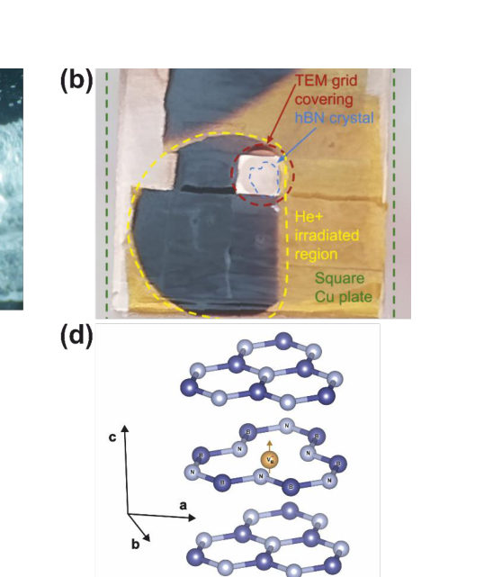
<figcaption class="paper-figure-caption"><b>Fig 1.</b> Figure 1. a) photo of the non-irradiated crystals, the scale bar is 1 mm; b) photo of the irradiated sample c) simplified energy level structure of the 𝑉𝐵</figcaption>
</figure>
<figure class="paper-figure-card">
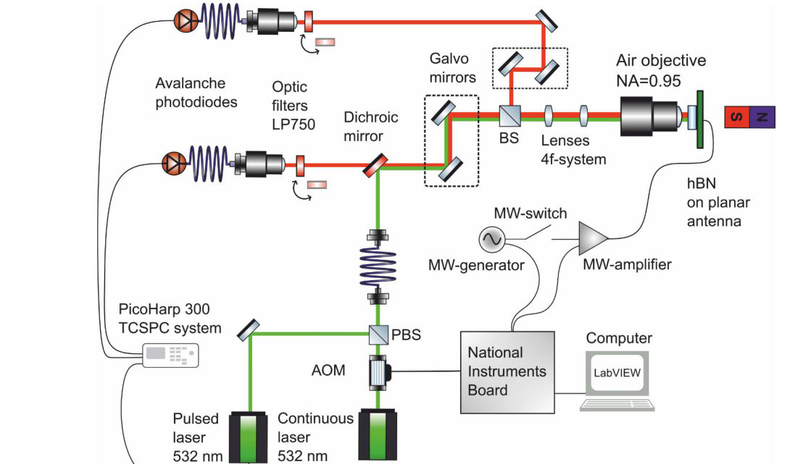
<figcaption class="paper-figure-caption"><b>Fig 2.</b> Figure 2. Simplified schematic of the home-built confocal microscope setup.</figcaption>
</figure>
<figure class="paper-figure-card">
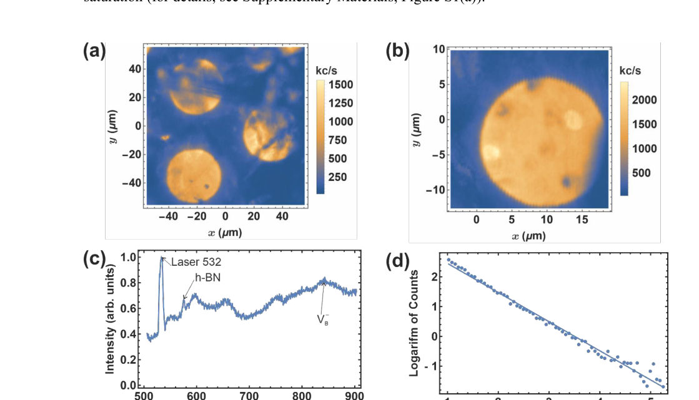
<figcaption class="paper-figure-caption"><b>Fig 3.</b> Figure 3. Confocal scans of the irradiated bulk h-BN crystal. a) overview scan; b) zoomed-in region; c) photoluminescence spectrum; d) intensity of a color center versus time on a logarithmic scale.</figcaption>
</figure>
<figure class="paper-figure-card">
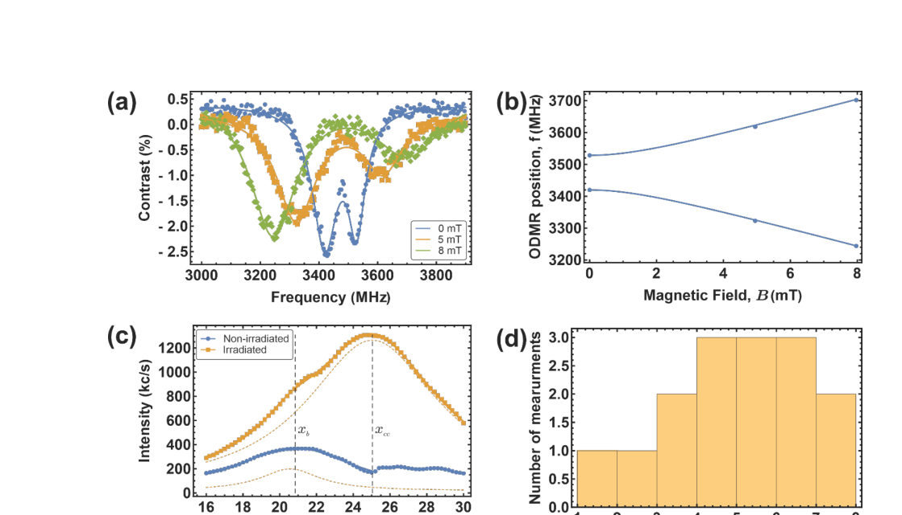
<figcaption class="paper-figure-caption"><b>Fig 4.</b> Figure 4. a) experimental ODMR spectra of the irradiated h-BN crystal for different external magnetic fields; b) fitted resonance frequencies from the ODMR spectra plotted versus the estimated magnetic field; c) dependence of the signal from non- irradiated (reflection) and irradiated (photoluminescence and reflection) areas on the objective position during scanning along the c-axis of the h-BN crystal. Orange dashed lines represent the Lorentzian fit, vertical black dashed lines represent the crystal boundary 𝑥𝑏 and the depth of the color centers 𝑥𝐶𝐶; d) histogram of the estimated experimental depths of color centers.</figcaption>
</figure>
<figure class="paper-figure-card">
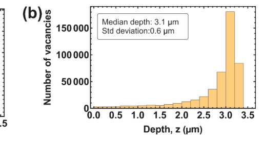
<figcaption class="paper-figure-caption"><b>Fig 5.</b> Figure 5. Results of SRIM modeling of h-BN irradiated with 1.1 MeV He+ particles. (a) ion range distribution; (b) depth distribution of irradiation-induced vacancies.</figcaption>
</figure>
</div>

<p><strong>Summary.</strong> This work reports on the successful creation and detailed characterization of negatively charged boron vacancy color centers in bulk h-BN using high-energy helium ion irradiation. By employing ODMR and PL spectroscopy, the authors confirmed the spin properties of the defect and measured its physical depth. This research advances the use of 2D materials for solid-state quantum memory and sensing applications.</p>
<p><strong>Why it may be interesting.</strong> The $    ext{B}_{    ext{V}}^-$ center acts as a solid-state spin qubit candidate. The detailed characterization of its spin Hamiltonian parameters ($D, E, \gamma$) and its integration into a robust fabrication protocol are highly relevant for quantum information research.</p>
<details>
<summary>Detailed structure</summary>
<p><strong>Main problem.</strong> The paper focuses on demonstrating the reliable fabrication and characterizing the negatively charged boron vacancy ($    ext{B}_{    ext{V}}^-$) color center in bulk hexagonal boron nitride ($    ext{h-BN}$).</p>
<p><strong>Main result.</strong> The authors successfully confirmed the creation of $   ext{B}_{    ext{V}}^-$ centers using characteristic photoluminescence and optically detected magnetic resonance (ODMR) measurements.</p>
<p><strong>Method.</strong> The research combines experimental techniques like high-energy $    ext{He}^+$ ion irradiation, PL, and ODMR with theoretical modeling (SRIM) to characterize the defect.</p>
<p><strong>Model / system.</strong> The system is the $ ext{B}_{    ext{V}}^-$ color center in bulk $   ext{h-BN}$. The electronic structure is modeled by a Hamiltonian involving zero-field splitting ($D$) and orthorhombic splitting ($E$), which governs its spin $S=1$ behavior in a magnetic field.</p>
<p><strong>Key observables.</strong> Photoluminescence (PL) spectrum (peak at 800–850 nm), Zeeman shift in ODMR resonance lines, and the depth profile of the color center along the c-axis.</p>
<p><strong>Important parameters / regimes.</strong> Zero-field splitting parameter ($D \approx 3.48 	ext{ GHz}$), orthorhombic splitting ($E \approx 50 	ext{ MHz}$), and the measured resonance width ($180 	ext{ MHz}$).</p>
<p><strong>Assumptions / limitations.</strong> The primary discrepancy noted is that the experimental depth of the vacancy is greater than the depth predicted by standard SRIM modeling, suggesting unaccounted physical processes like ion channeling.</p>
<p><strong>Figures summary.</strong> Figures illustrate the crystal structure, the energy level diagram of the $    ext{B}_{    ext{V}}^-$ center, and schematics of the confocal microscope setup used for ODMR measurements.</p>
<p><strong>Paper structure.</strong> The paper follows a structure of problem definition (need for 2D color centers), experimental demonstration (irradiation, PL, ODMR), quantitative analysis (measuring Zeeman shifts and depth), and comparison with theoretical modeling.</p>
</details>
<details>
<summary>Abstract</summary>
<p>While color centers in diamond and other three-dimensional crystals are nowadays key elements of several types of sensors, color centers in two-dimensional materials are rapidly developing and promise high-tech applications. One of the interesting centers in 2D materials is the negatively charged boron vacancy in hexagonal boron nitride (h-BN), which has already shown some potential for magnetometry, but the reliable creation of boron vacancies remains challenging. Here, we demonstrate the fabrication of negatively charged boron vacancy color centers in bulk h-BN via implantation of helium ions at ~1 MeV, as confirmed by characteristic photoluminescence and optically detected magnetic resonance. The resonance has a width of 180 MHz and exhibits the expected Zeeman shift of the resonance lines. The depth of the color center along the c-axis of the h-BN crystal was measured and compared with predictions from Stopping and Range of Ions in Matter modeling. The experimental value and the modeled prediction are consistent within the reported uncertainties, as their 1σ intervals overlap, although the experiment shows a greater depth and a wider distribution.</p>
</details>
<p><sub><a href="#top">↑ back to top</a></sub></p>

<p><a id="paper-2609.40033"></a></p>
<h3 id="experimentally-realized-local-global-tradeoff-in-quantum-resources"><a href="http://arxiv.org/abs/2609.40033v1">Experimentally realized local-global tradeoff in quantum resources</a></h3>
<p><strong>Authors:</strong> Yue Dai, Zhiyu Wang, Xinzhi Zhao, Xinglei Yu, Chengjie Zhang<br>
<strong>Type:</strong> both · <strong>Category:</strong> quantum information and computing · <strong>PDF:</strong> <a href="https://arxiv.org/pdf/2609.40033v1">https://arxiv.org/pdf/2609.40033v1</a><br>
<strong>Analysis basis:</strong> full PDF text, analyzed in chunks
<strong>Topic relevance:</strong> 🔥 <code>quantum optics experiment</code> <strong>4/5</strong> · <code>QC/QI experiment</code> <strong>3/5</strong> · <code>quantum measurements</code> <strong>1/5</strong></p>
<div class="figure-strip-hint">↔ Scroll figures horizontally</div>
<div class="paper-figures-scroll">
<figure class="paper-figure-card">
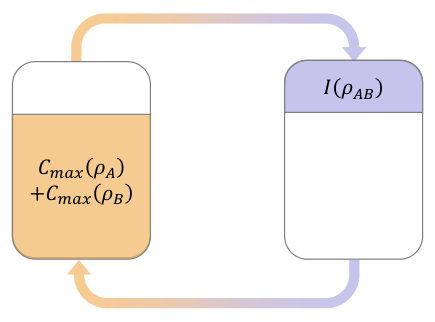
<figcaption class="paper-figure-caption"><b>Fig 1.</b> FIG. 1. The local-global tradeoff in quantum resources. The sum of local maximum coherence Cmax(ρA) + Cmax(ρB) de- notes the local quantum resource (left), and quantum mu- tual information I(ρAB) is the global resource (right). Our experiments demonstrate that the above two resources can be transformed into each other in a two-qubit system. The orange indicates local resource, i.e., the local maximum co- herence. The lavender indicates global resource — quantum mutual information. Arrows illustrate the conversion between the two resources.</figcaption>
</figure>
<figure class="paper-figure-card">
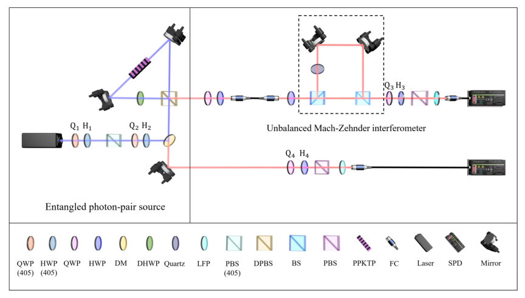
<figcaption class="paper-figure-caption"><b>Fig 2.</b> FIG. 2. The experimental setup. The first PBS polarize the photons from the cw laser. Q2 and H2 used to adjust the polarization direction of the light source. The polarization-entangled photon pairs are generated by the spontaneous parametric down-conversion process of the PPKTP. The PPKTP used in the experiment only responds to horizontally polarized light, so we set up a DHWP rotated 45¡˜a on the originally vertically polarized light path of the PPKTP side. An unbalanced Mach- Zehnder interferometer in the dashed pane, which separates the photon into long and short paths, is inserted into up part to prepare mixed states. We inserted different numbers of BSs into two paths respectively to...</figcaption>
</figure>
<figure class="paper-figure-card">
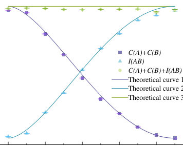
<figcaption class="paper-figure-caption"><b>Fig 3.</b> FIG. 3. The result of pure states. Here we calculate three sets of data. The light green solid line is the theoretical value of the upper bound of the inequality, while the round points are experimental values. The light purple solid line is the theoretical value of the local maximum coherence, while the square points are experimental values. The light blue solid line is the theoretical value of the QMI, while the triangle points are experimental values. As the light green solid line rises, the light purple solid line falls, This shows there is a tradeoff between local maximum coherence and the QMI.</figcaption>
</figure>
<figure class="paper-figure-card">
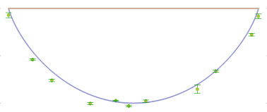
<figcaption class="paper-figure-caption"><b>Fig 4.</b> FIG. 4. The result of mixed states. In this experiment we just want to know whether the upper bound on the inequality still holds, so we only calculate one set of experimental data. The light green points represent the experimental values of the sum of local maximum coherence and the QMI, while the blue solid line is the theoretical value. The brown solid line is the upper bound of the inequality. The green points are all below the brown solid line.</figcaption>
</figure>
</div>

<p><strong>Summary.</strong> This paper experimentally establishes a fundamental tradeoff inequality linking local quantum resources (maximum coherence) and global quantum resources (quantum mutual information) in bipartite quantum states. Using entangled photons, the authors demonstrate that these resources are complementary, showing that enhancing one necessarily constrains the other. This provides crucial physical insight into the resource management within quantum networks.</p>
<p><strong>Why it may be interesting.</strong> This work provides concrete experimental evidence for fundamental resource constraints in quantum information, linking local properties (coherence) to global correlations (QMI) in a way that has implications for quantum network design.</p>
<details>
<summary>Detailed structure</summary>
<p><strong>Main problem.</strong> The paper investigates and experimentally demonstrates a fundamental tradeoff relationship between local quantum resources (measured by maximum coherence) and global quantum resources (measured by quantum mutual information).</p>
<p><strong>Main result.</strong> A tradeoff inequality is established showing that the sum of local maximum coherence and quantum mutual information is bounded by a definitive upper limit. This implies that local and global quantum resources are mutually exclusive, meaning enhancing one necessarily limits the other.</p>
<p><strong>Method.</strong> The authors use quantum state tomography on experimentally generated entangled photon pairs to measure various quantum resource quantities. They compare experimental measurements against theoretically derived tradeoff inequalities.</p>
<p><strong>Model / system.</strong> The study uses an optical quantum system employing polarization degrees of freedom of entangled photon pairs generated via Spontaneous Parametric Down-Conversion (SPDC). The system is analyzed for both pure and mixed bipartite quantum states.</p>
<p><strong>Key observables.</strong> Local maximum coherence ($C_{\max}(
ho_A) + C_{\max}(
ho_B)$) and Quantum Mutual Information ($I(
ho_{AB})$).</p>
<p><strong>Important parameters / regimes.</strong> The tradeoff inequality itself, $C_{\max}(
ho_A) + C_{\max}(
ho_B) + I(
ho_{AB}) \leq \log_2(d_A d_B)$.</p>
<p><strong>Assumptions / limitations.</strong> The analysis relies on the basis-independent measure of maximum coherence, $C_{\max}(
ho)$, and the derived inequality holds with equality if and only if the state is pure.</p>
<p><strong>Figures summary.</strong> Figures illustrate the local-global tradeoff curve, showing the relationship between local coherence and QMI for both pure and mixed states, comparing experimental data points to theoretical bounds.</p>
<p><strong>Paper structure.</strong> The paper first introduces the concept of the local-global tradeoff, then details the experimental setup using entangled photons. It derives the general tradeoff inequality, experimentally verifies this inequality for pure states, and analyzes how mixed states fall below the theoretical bound due to entropy.</p>
</details>
<details>
<summary>Abstract</summary>
<p>The interconversion among different quantum resources has attracted considerable attention, exemplified by the tradeoff between coherence and entanglement. However, the relationship between local and global quantum resources remains largely unexplored. Here, we propose and experimentally demonstrate a local global tradeoff in quantum resources, quantified respectively by the local maximum coherence and the quantum mutual information. Our experiments show that the sum of the local maximum coherence and the quantum mutual information is bounded by a definitive upper limit. These results not only establish a fundamental tradeoff inequality, but also provide direct experimental evidence of the complementarity between local and global quantum resources. Moreover, our findings reveal an important constraint in quantum networks: the local quantum resources available at individual nodes and the global quantum resources of the network are mutually exclusive, implying that enhancing one necessarily limits the other.</p>
</details>
<p><sub><a href="#top">↑ back to top</a></sub></p>

<p><a id="paper-2609.39415"></a></p>
<h3 id="reservoir-and-measurement-free-microwave-initialization-of-semiconductor-spin-qubits"><a href="http://arxiv.org/abs/2609.39415v1">Reservoir- and Measurement-free Microwave Initialization of Semiconductor Spin Qubits</a></h3>
<p><strong>Authors:</strong> Leon C. Camenzind, Ik Kyeong Jin, Akito Noiri, Kenta Takeda, Takashi Nakajima, Takashi Kobayashi, Seigo Tarucha<br>
<strong>Type:</strong> experiment · <strong>Category:</strong> quantum information and computing · <strong>PDF:</strong> <a href="https://arxiv.org/pdf/2609.39415v1">https://arxiv.org/pdf/2609.39415v1</a><br>
<strong>Analysis basis:</strong> full PDF text, analyzed in chunks
<strong>Topic relevance:</strong> 🔥 <code>QC/QI experiment</code> <strong>4/5</strong> · <code>quantum measurements</code> <strong>2/5</strong></p>
<div class="figure-strip-hint">↔ Scroll figures horizontally</div>
<div class="paper-figures-scroll">
<figure class="paper-figure-card">
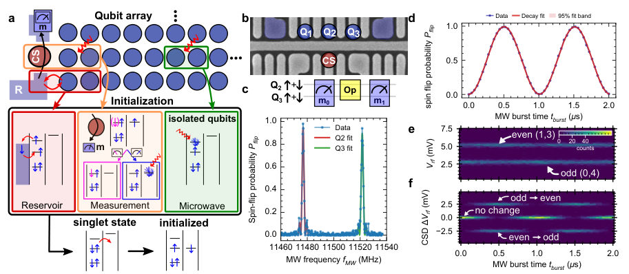
<figcaption class="paper-figure-caption"><b>Fig 1.</b> Figure 1: Initialization concepts, device and parity readout. a, Schematic comparison of</figcaption>
</figure>
<figure class="paper-figure-card">
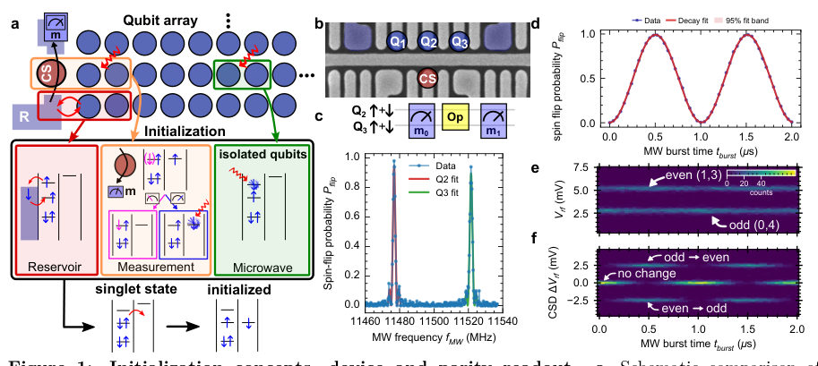
<figcaption class="paper-figure-caption"><b>Fig 2.</b> Figure 2b shows the pulse trajectory, Fig. 2c illustrates the initialization cycle, and</figcaption>
</figure>
<figure class="paper-figure-card">

<figcaption class="paper-figure-caption"><b>Fig 3.</b> Figure 2: Spin-charge spectrum underlying microwave initialization. a Canonical charge sta-</figcaption>
</figure>
<figure class="paper-figure-card">
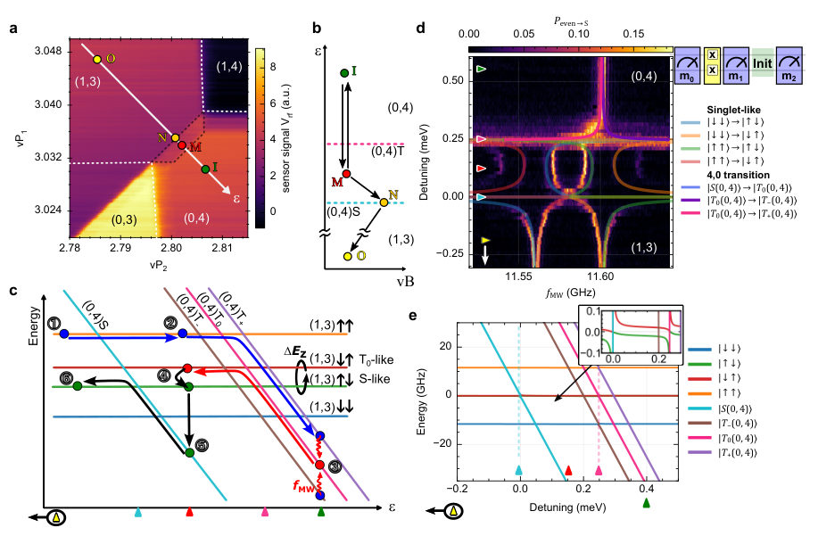
<figcaption class="paper-figure-caption"><b>Fig 4.</b> Figure 3 characterizes microwave transfer and repeated pumping, with sequences for rep-</figcaption>
</figure>
<figure class="paper-figure-card">
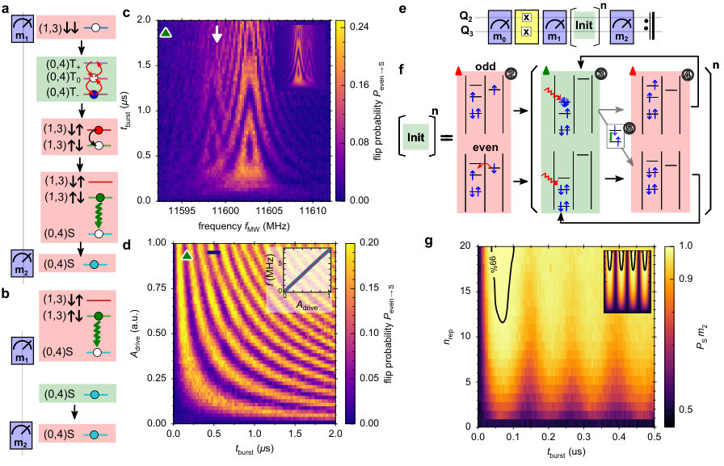
<figcaption class="paper-figure-caption"><b>Fig 5.</b> Figure 3: Microwave-driven triplet transfer and repeated initialization. a, Simplified sequence</figcaption>
</figure>
</div>

<p><strong>Summary.</strong> The authors present a microwave-driven, reservoir- and measurement-free method to initialize semiconductor spin qubits into a target singlet state. By exploiting spin-charge physics near a Pauli blockade, they achieve high-fidelity initialization using only fixed microwave pulse sequences. This establishes a crucial, scalable control primitive for building large quantum processors.</p>
<p><strong>Why it may be interesting.</strong> This work provides an experimentally validated, solid-state method for state preparation that circumvents major scaling bottlenecks in quantum computing architectures, directly relevant to solid-state quantum information processing.</p>
<details>
<summary>Detailed structure</summary>
<p><strong>Main problem.</strong> Developing scalable methods for initializing semiconductor spin qubits without relying on complex, hard-to-distribute local reservoirs or measurement feedback.</p>
<p><strong>Main result.</strong> A fixed-sequence microwave initialization protocol was demonstrated, achieving a high singlet-associated charge outcome probability of 99.4% and establishing a scalable control primitive for spin-qubit processors.</p>
<p><strong>Method.</strong> The protocol uses a fixed sequence of microwave and baseband pulses to drive the system through the triplet manifold, enabling conversion to the singlet charge state.</p>
<p><strong>Model / system.</strong> The work uses silicon spin qubits in an industrially fabricated Si/SiGe quantum-dot device, operating near the (1, 3)–(0, 4) Pauli-blockade transition.</p>
<p><strong>Key observables.</strong> Singlet-associated charge outcome probability ($P_S$), Rabi oscillation visibility, and charge-signal difference (CSD) measurements.</p>
<p><strong>Important parameters / regimes.</strong> Initialization time scale ($\approx 12 \mu	ext{s}$ initially, projecting sub-microsecond), and the singlet-triplet mixing time ($   au_{mix}$).</p>
<p><strong>Assumptions / limitations.</strong> The method relies on singlet-triplet physics within the Pauli spin blockade regime, suggesting applicability to other platforms with similar physics.</p>
<p><strong>Figures summary.</strong> Figures illustrate the spin-charge spectrum, the initialization cycle energy schematic, Rabi oscillations, and the dependence of initialization probability on repetition number and pulse parameters.</p>
<p><strong>Paper structure.</strong> The paper progresses from characterizing the physical system and coherent control (Rabi oscillations) to detailing the fixed-sequence initialization protocol, analyzing its repetition dependence, and finally establishing its viability as a scalable control primitive.</p>
</details>
<details>
<summary>Abstract</summary>
<p>Scalable quantum processors require repeated qubit initialization throughout large arrays. In semiconductor spin qubits, fast initialization commonly relies on local reservoir access or measurement-based feedback, requiring dedicated infrastructure that becomes increasingly difficult to distribute as processors scale. Here, we demonstrate reservoir- and measurement-free initialization of a silicon spin-qubit pair in an industrially fabricated Si/SiGe quantum-dot device using a fixed sequence of microwave and baseband pulses. Odd spin-parity states relax to the singlet charge state, whereas blocked even spin-parity states are microwave-driven through the triplet manifold and subsequently converted to the singlet by singlet-triplet mixing and charge hybridization. Repeated cycles produce the singlet-associated charge outcome with a median probability of 99.4% across the sampled preparation states, while exchange spectroscopy independently verifies mapping to the target $|\uparrow\downarrow\rangle$ operational state. Microwave spectroscopy and time-domain measurements identify the dark-state-limited single-cycle transfer and the subsequent blockade-lifting dynamics that set the initialization time scale. The demonstrated pumping sequence uses approximately $12\,μ\mathrm{s}$ of microwave bursts and mixing dwells, while we project sub-microsecond initialization under improved device conditions. These results establish fixed-sequence microwave initialization as a scalable control primitive for semiconductor spin-qubit processors, based on singlet-triplet physics that can be adapted to platforms with suitable Pauli-blockade transitions.</p>
</details>
<p><sub><a href="#top">↑ back to top</a></sub></p>

<p><a id="paper-2609.39231"></a></p>
<h3 id="mixed-bubbles-in-a-binary-mixture-of-spin-1-bose-einstein-condensates"><a href="http://arxiv.org/abs/2609.39231v1">Mixed bubbles in a binary mixture of spin-1 Bose-Einstein condensates</a></h3>
<p><strong>Authors:</strong> Uyen Ngoc Le, Ha Phuong Uyen Mai, Hieu Binh Le, Hiroki Saito<br>
<strong>Type:</strong> theory · <strong>Category:</strong> quantum gases · <strong>PDF:</strong> <a href="https://arxiv.org/pdf/2609.39231v1">https://arxiv.org/pdf/2609.39231v1</a><br>
<strong>Analysis basis:</strong> full PDF text, analyzed in chunks
<strong>Topic relevance:</strong> 🔥 <code>analog quantum simulation</code> <strong>4/5</strong> · <code>Keldysh / 2PI / non-Gaussian methods</code> <strong>1/5</strong></p>
<div class="figure-strip-hint">↔ Scroll figures horizontally</div>
<div class="paper-figures-scroll">
<figure class="paper-figure-card">
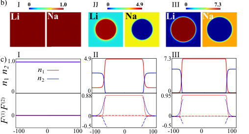
<figcaption class="paper-figure-caption"><b>Fig 1.</b> FIG. 1. Ground-state properties of a binary mixture of spin-1 7Li and 23Na BECs for Bz = 2 G. (a) Ground-state phase di- agram with respect to the average densities ¯n1 = N1/V and ¯n2 = N2/V . The circles labeled I-III indicate the parame- ters used in the lower panels. (b) Two-dimensional density distributions obtained by solving the GP equation. (c) One- dimensional density profiles nj(x, y = 0) and magnetization profiles F (j)(x, y = 0), where the origin is located at the cen- ter. States I, II, and III correspond to the uniformly-mixed, mixed-bubble, and totally-separated phases, respectively.</figcaption>
</figure>
<figure class="paper-figure-card">
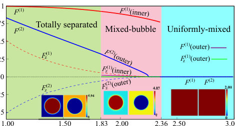
<figcaption class="paper-figure-caption"><b>Fig 2.</b> FIG. 2. Ground-state phases as a function of the external magnetic field Bz for fixed average densities ¯n1 = ¯n2 = 2 × 1014 cm−3. Shown are the magnetizations F (j) = |F (j)| and F (j) z of the ground-state domains. In the mixed-bubble phase, 7Li occupies both the mixed and pure-7Li domains, re- sulting in two branches for F (1) and F (1) z . The upper branches terminate at Bz ≃2.36 G, where the pure-7Li domain van- ishes. The insets show representative GP density profiles for Bz = 1.5, 2.0, and 2.5 G.</figcaption>
</figure>
<figure class="paper-figure-card">
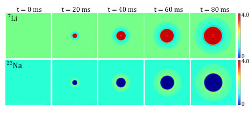
<figcaption class="paper-figure-caption"><b>Fig 3.</b> FIG. 4. Real-time evolution obtained by solving the GP equa- tion for Bz = 2 G. The initial state is a uniformly-mixed state in which both 7Li and 23Na are in the polar state, with n1 = 1.8 × 1014 cm−3 and n2 = 1.2 × 1014 cm−3 A local per- turbation [Eq. (7)] is applied with B0 = 1.6 mG and a = 4 µm. The perturbation nucleates a pure-7Li domain near the center, which triggers a transition to the mixed-bubble state throughout the system.</figcaption>
</figure>
<figure class="paper-figure-card">
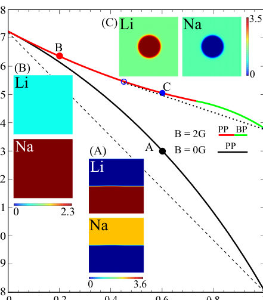
<figcaption class="paper-figure-caption"><b>Fig 4.</b> FIG. 3. Gibbs free energy per particle g in Eqs. (5) and (6) as a function of the composition R = N1/(N1 + N2) for Bz = 0 and 2 G at fixed pressure P = 3.75 × 10−10 N/m2. The ab- breviations PP and BP denote states in which 7Li is in the polar and broken-axisymmetry states, while 23Na is assumed to remain in the polar state. Insets show the ground states obtained by solving the GP equation for (A) R = 0.6 and B = 0, (B) R = 0.2 and B = 2 G, and (C) R = 0.6 and B = 2 G. In the GP simulation, the total number of atoms is adjusted to give the same P as that used in the main panel. The dashed line indicates the lowest-energy totally-separated state, and the dotted line the common tangent...</figcaption>
</figure>
</div>

<p><strong>Summary.</strong> This paper investigates the complex phase behavior of a binary mixture of spin-1 BECs, demonstrating the existence of a novel 'mixed-bubble' ground state using mean-field theory. The authors show that the stability of this phase depends critically on the applied magnetic field, offering a pathway to engineer specific spatial mixing patterns in quantum gas systems.</p>
<p><strong>Why it may be interesting.</strong> This work provides a detailed theoretical mechanism for stabilizing complex, non-trivial spatial structures (mixed bubbles) in spinor BEC mixtures purely through mean-field interactions, which is crucial for designing quantum simulators.</p>
<details>
<summary>Detailed structure</summary>
<p><strong>Main problem.</strong> To theoretically demonstrate the emergence of a mixed-bubble state in a binary mixture of spin-1 Bose-Einstein condensates (BECs) using mean-field theory.</p>
<p><strong>Main result.</strong> The study shows that the mixed-bubble phase exists in the ground state phase diagram, contrasting with simpler predictions, and that a metastable uniformly-mixed state can transition into this mixed-bubble state via local perturbations.</p>
<p><strong>Method.</strong> The analysis employs mean-field theory, solving coupled Gross-Pitaevskii equations and minimizing the total energy/Gibbs free energy to map out the ground state phase diagram.</p>
<p><strong>Model / system.</strong> The system is a binary mixture of spin-1 $^{7}{
m{Li}}$ and $^{23}{
m{Na}}$ BECs in a uniform trap, governed by mean-field interactions and subject to external magnetic fields.</p>
<p><strong>Key observables.</strong> Ground-state phase diagram ($ar{n}_1$ vs $ar{n}_2$), density distributions ($
ho_j(r)$), magnetization profiles ($\mathbf{F}^{(j)}(r)$), and the Gibbs free energy $g(R)$.</p>
<p><strong>Important parameters / regimes.</strong> Magnetic field strength ($B_z$), average densities ($ar{n}_1, ar{n}_2$), and the mixing ratio ($R$).</p>
<p><strong>Assumptions / limitations.</strong> The analysis assumes the system is in the thermodynamic limit, zero total magnetization ($\sum_j \mathbf{f}^{(j)}(r) = 0$), and relies on mean-field approximations.</p>
<p><strong>Figures summary.</strong> Figures illustrate the phase diagram showing three distinct phases (mixed-bubble, uniformly-mixed, totally-separated) as a function of $B_z$, and show density/magnetization profiles characterizing these different spatial domain structures.</p>
<p><strong>Paper structure.</strong> The paper establishes the theoretical framework using the GP equations, analyzes the energy landscape via the Gibbs free energy $g(R)$ to predict phase stability, and finally uses dynamic arguments to show the transition between the metastable uniform state and the mixed-bubble state.</p>
</details>
<details>
<summary>Abstract</summary>
<p>In mean-field theory, the ground state of a two-component Bose-Einstein condensate (BEC) in a uniform system is either uniformly mixed or totally separated. Beyond-mean-field effects introduce an additional phase, the mixed-bubble state, in which the two components remain mixed within one of the separated domains. Here we show that a mixed-bubble state can emerge in a binary mixture of spin-1 ${}^{7}{\rm{Li}}$ and ${}^{23}{\rm{Na}}$ BECs even within the mean-field framework. We further demonstrate the existence of a metastable uniformly-mixed state, which undergoes a transition to the mixed-bubble state triggered by a local perturbation.</p>
</details>
<p><sub><a href="#top">↑ back to top</a></sub></p>

<p><a id="paper-2609.39857"></a></p>
<h3 id="optical-measurement-is-almost-quantum-quantum-inspired-universal-optical-bounds"><a href="http://arxiv.org/abs/2609.39857v1">Optical measurement is almost quantum: Quantum inspired universal optical bounds</a></h3>
<p><strong>Authors:</strong> Daniel Ish, Chase T. Ellis<br>
<strong>Type:</strong> theory · <strong>Category:</strong> other · <strong>PDF:</strong> <a href="https://arxiv.org/pdf/2609.39857v1">https://arxiv.org/pdf/2609.39857v1</a><br>
<strong>Analysis basis:</strong> full PDF text, analyzed in chunks
<strong>Topic relevance:</strong> 🔥 <code>quantum measurements</code> <strong>4/5</strong> · <code>interference shaping light</code> <strong>1/5</strong></p>
<div class="figure-strip-hint">↔ Scroll figures horizontally</div>
<div class="paper-figures-scroll">
<figure class="paper-figure-card">
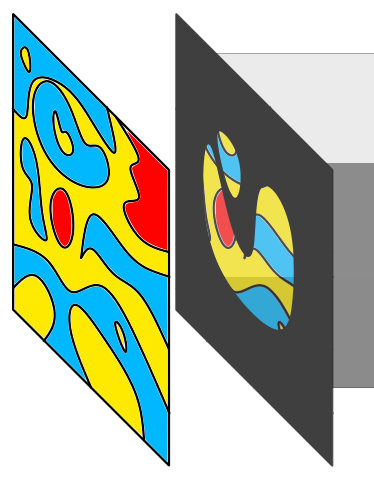
<figcaption class="paper-figure-caption"><b>Fig 1.</b> Fig. 1 A schematic depiction of a general optical system.</figcaption>
</figure>
</div>

<p><strong>Summary.</strong> This work establishes a universal theoretical framework for bounding the precision of any passive optical measurement, generalizing concepts from quantum information theory. By deriving an optical Cramér-Rao bound, the authors show that the resulting formalism closely mirrors quantum mechanics, providing powerful, technology-agnostic limits for sensing applications. This is significant for understanding the fundamental limits of optical measurement beyond purely quantum regimes.</p>
<p><strong>Why it may be interesting.</strong> It provides a rigorous, generalized framework for quantum-inspired sensing limits in classical optics, showing deep structural parallels between classical measurement theory and quantum information theory.</p>
<details>
<summary>Detailed structure</summary>
<p><strong>Main problem.</strong> The paper develops a general formalism to establish universal bounds on the performance of optical sensing, independent of the specific optical hardware used.</p>
<p><strong>Main result.</strong> The derived optical measurement formalism is nearly identical to the quantum one, yielding a universal uncertainty principle that controls measurement performance for any passive optical system.</p>
<p><strong>Method.</strong> The authors adapt the quantum Cramér-Rao bound methodology, deriving a classical Fisher information for the optical case using a Pixel Operator Measure (POM) formalism.</p>
<p><strong>Model / system.</strong> The analysis applies to general passive optical systems, including imagers and interferometers, modeling the measurement as an expectation value derived from the electric field at the focal plane.</p>
<p><strong>Key observables.</strong> Fisher information ($I_	heta$), measurement uncertainty ($\sigma^2$), and the state density matrix ($\hat{
ho}$).</p>
<p><strong>Important parameters / regimes.</strong> Aperture diameter ($D$), wavelength ($\lambda$), noise variance ($\sigma^2$), and the parameter to be estimated ($   heta$).</p>
<p><strong>Assumptions / limitations.</strong> The analysis assumes paraxial fields, a simple canonical detector response, and that electronics noise is the dominant source, independent of the field state.</p>
<p><strong>Figures summary.</strong> Figure 1 schematically depicts a general optical system flow: Aperture -&gt; Linear Optical Material -&gt; Photodetectors.</p>
<p><strong>Paper structure.</strong> The paper builds from establishing the general formalism and the POM measurement description, derives the optical Cramér-Rao bound, and then applies this bound to specific sensing problems like wavefront aberration and depth estimation, comparing results to the quantum limit.</p>
</details>
<details>
<summary>Abstract</summary>
<p>Inspired by results in quantum information, we report the development of a formalism for optical sensing which abstracts the details of specific optical systems and allows us to form general bounds on measurement based only on the quantity to be measured. We find a universal bound that controls the performance of any passive optical system regardless of the technology used to construct it and that this bound is attained by a unique measurement scheme for each quantity of interest. Shockingly, our optical formalism is nearly identical to the quantum formalism, with essentially the same notions of the state to be measured and the operation of the measurement, along with an accompanying uncertainty principle.</p>
</details>
<p><sub><a href="#top">↑ back to top</a></sub></p>

<p><a id="paper-2609.38580"></a></p>
<h3 id="algebraic-characterization-of-biphoton-spatial-mode-entanglement-in-higher-order-laguerre-gaussian-pumped-spdc"><a href="http://arxiv.org/abs/2609.38580v1">Algebraic Characterization of Biphoton Spatial-Mode Entanglement in Higher-Order Laguerre--Gaussian-Pumped SPDC</a></h3>
<p><strong>Authors:</strong> Takumi Jinushi, Hirokazu Kobayashi<br>
<strong>Type:</strong> theory · <strong>Category:</strong> quantum information and computing · <strong>PDF:</strong> <a href="https://arxiv.org/pdf/2609.38580v1">https://arxiv.org/pdf/2609.38580v1</a><br>
<strong>Analysis basis:</strong> full PDF text, analyzed in chunks
<strong>Topic relevance:</strong> 🔥 <code>interference shaping light</code> <strong>4/5</strong></p>
<div class="figure-strip-hint">↔ Scroll figures horizontally</div>
<div class="paper-figures-scroll">
<figure class="paper-figure-card">
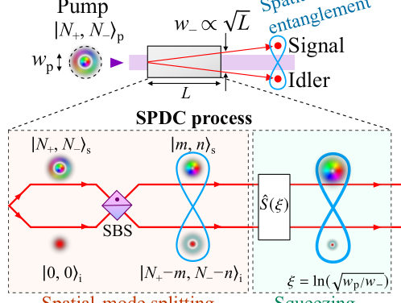
<figcaption class="paper-figure-caption"><b>Fig 1.</b> FIG. 1. Schematic of the operational decomposition of LG- pumped SPDC. The spatial-mode beam-splitter transforma- tion ˆUSBS coherently redistributes the pump-mode excitations between the signal and idler, after which the spatial two-mode squeezing operator ˆS(ξ) acts on the resulting biphoton state. The squeezing parameter ξ = ln p</figcaption>
</figure>
<figure class="paper-figure-card">
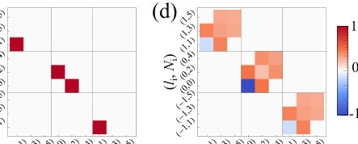
<figcaption class="paper-figure-caption"><b>Fig 2.</b> FIG. 2. Biphoton spatial-mode distributions in the LG basis with reference radius w0 for a fundamental Gaussian pump |0, 0⟩p (top row) and a higher-order LG pump |1, 1⟩p (bottom row). (a), (c) Under the correlation-width matching condi- tion ξ = 0, spatial squeezing vanishes and the distributions are confined to a finite mode manifold satisfying Ns+Ni = N. (b), (d) For ξ ̸= 0, spatial squeezing broadens the distri- butions beyond this fixed-total-mode-number manifold while preserving the finite mode-difference range −N ≤∆Ns,i ≤N. For the fundamental pump in (b), ∆Ns,i = 0, yielding one- to-one diagonal pairing between conjugate signal and idler modes.</figcaption>
</figure>
<figure class="paper-figure-card">

<figcaption class="paper-figure-caption"><b>Fig 3.</b> FIG. 3. Schmidt number K N− N+ (ξ) as a function of the squeezing parameter ξ for representative LG pump modes |N+, N−⟩p. For all pump modes, the Schmidt number is an even function of ξ, reaches its minimum at the correlation- width matching condition ξ = 0, and increases with |ξ|.</figcaption>
</figure>
<figure class="paper-figure-card">
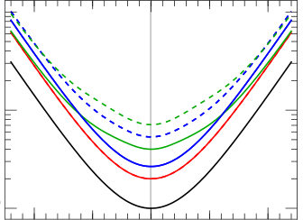
<figcaption class="paper-figure-caption"><b>Fig 4.</b> Figure 4 compares the pump-mode-dependent</figcaption>
</figure>
<figure class="paper-figure-card">
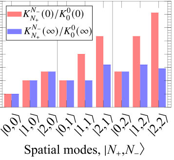
<figcaption class="paper-figure-caption"><b>Fig 5.</b> FIG. 4. Comparison of the pump-mode-dependent Schmidt- number ratio between the correlation-width matching condi- tion ξ = 0 (red bars) and the strong-squeezing limit |ξ| →∞ (blue bars). For p = min(N+, N−) = 0, the ratio is indepen- dent of ξ and is therefore preserved under spatial squeezing. For p ≥1, the ratio decreases in the strong-squeezing limit, with the reduction being most pronounced for purely radial pump modes, N+ = N−= p.</figcaption>
</figure>
</div>

<p><strong>Summary.</strong> This paper provides an algebraic framework to characterize the high-dimensional spatial entanglement of biphotons generated by SPDC using LG-pumped beams. By decomposing the process into beam-splitter and squeezing operations, the authors derive the Schmidt number as a function of the pump mode indices. This offers a deep theoretical understanding of entanglement dimensionality and associated conservation laws in structured light quantum sources.</p>
<p><strong>Why it may be interesting.</strong> This work provides a rigorous, mathematically unified description of high-dimensional entanglement resources generated optically, which is crucial for designing quantum communication protocols based on structured light.</p>
<details>
<summary>Detailed structure</summary>
<p><strong>Main problem.</strong> The paper aims to develop an algebraic framework to characterize the complex spatial-mode entanglement generated in biphotons via Spontaneous Parametric Down-Conversion (SPDC) when the pump beam uses higher-order Laguerre-Gaussian (LG) modes.</p>
<p><strong>Main result.</strong> The authors derive an analytical expression for the Schmidt number, showing how the radial and azimuthal indices of the LG pump modes govern the dimensionality of the spatial entanglement. They also establish conservation laws when the pump beam radius matches the crystal correlation width.</p>
<p><strong>Method.</strong> The core method involves factorizing the SPDC process into a spatial-mode beam-splitter transformation followed by a spatial two-mode squeezing operation, analyzed in the transverse wavevector space.</p>
<p><strong>Model / system.</strong> The system is the biphoton state $|\Psi_{N^-}^{N+}
angle$ generated in an SPDC process using a higher-order LG-pumped beam. The analysis utilizes the LG-mode basis and sum/difference coordinates for the signal and idler photons.</p>
<p><strong>Key observables.</strong> Biphoton spatial-mode entanglement, Schmidt number ($K$), Orbital Angular Momentum (OAM), and the total spatial mode number ($N$).</p>
<p><strong>Important parameters / regimes.</strong> Pump-beam radius ($w_p$), crystal-induced correlation width ($w_-$), and the squeezing parameter ($\xi = \ln(w_p/w_-)$).</p>
<p><strong>Assumptions / limitations.</strong> The pump light is assumed to be monochromatic, CW, and collimated, and the analysis often assumes degenerate wavelengths.</p>
<p><strong>Paper structure.</strong> The paper builds from the general Hamiltonian description of the SPDC state, develops an algebraic factorization into beam-splitter and squeezing operations, analyzes the resulting conservation laws in different regimes ($\xi=0$ vs $\xi
eq 0$), and culminates in deriving asymptotic expressions for the Schmidt number.</p>
</details>
<details>
<summary>Abstract</summary>
<p>High-dimensional spatial entanglement generated via spontaneous parametric down-conversion (SPDC) provides a powerful resource for quantum information processing, yet its mode structure becomes increasingly complex when the pump occupies a higher-order Laguerre--Gaussian (LG) mode. Here, we develop an algebraic framework for characterizing biphoton spatial-mode entanglement by factorizing LG-pumped SPDC into a spatial-mode beam-splitter transformation followed by spatial two-mode squeezing. By choosing the biphoton LG basis radius as the geometric mean of the pump-beam radius and the crystal-induced correlation width, we obtain a natural modal basis in which the two operations can be treated separately. When the pump-beam radius matches the correlation width, spatial squeezing vanishes, and the two circular-mode components of the pump are independently conserved across the signal and idler photons, leading to conservation of both orbital angular momentum and the total spatial mode number. We further derive an analytical expression for the Schmidt number for arbitrary LG pump modes and squeezing strengths, revealing how the radial and azimuthal pump indices govern the dimensionality of the spatial entanglement. This algebraic characterization provides a unified description of the mode structure, conservation laws, and entanglement dimensionality of higher-order-LG-pumped SPDC.</p>
</details>
<p><sub><a href="#top">↑ back to top</a></sub></p>

<p><a id="paper-2609.38836"></a></p>
<h3 id="joint-measurability-of-coplanar-povms"><a href="http://arxiv.org/abs/2609.38836v1">Joint measurability of coplanar POVMs</a></h3>
<p><strong>Authors:</strong> Taro Yoshino, Koichi Tojo, Kei Hagihara, Akinori Tanaka, Takuki Tomita<br>
<strong>Type:</strong> theory · <strong>Category:</strong> quantum information and computing · <strong>PDF:</strong> <a href="https://arxiv.org/pdf/2609.38836v1">https://arxiv.org/pdf/2609.38836v1</a><br>
<strong>Analysis basis:</strong> full PDF text, analyzed in chunks
<strong>Topic relevance:</strong> 🔥 <code>quantum measurements</code> <strong>4/5</strong></p>
<div class="figure-strip-hint">↔ Scroll figures horizontally</div>
<div class="paper-figures-scroll">
<figure class="paper-figure-card">
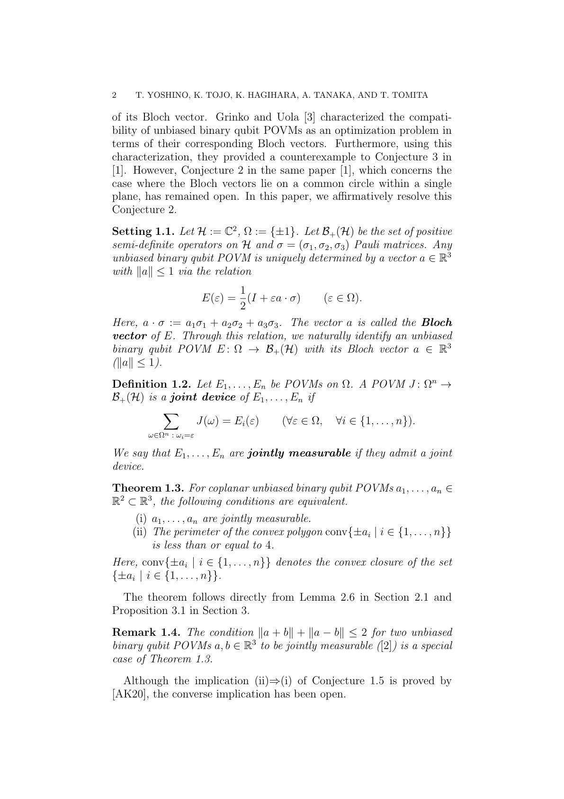
<figcaption class="paper-figure-caption"><b>Fig 1.</b> Low-resolution page preview, page 2</figcaption>
</figure>
<figure class="paper-figure-card">
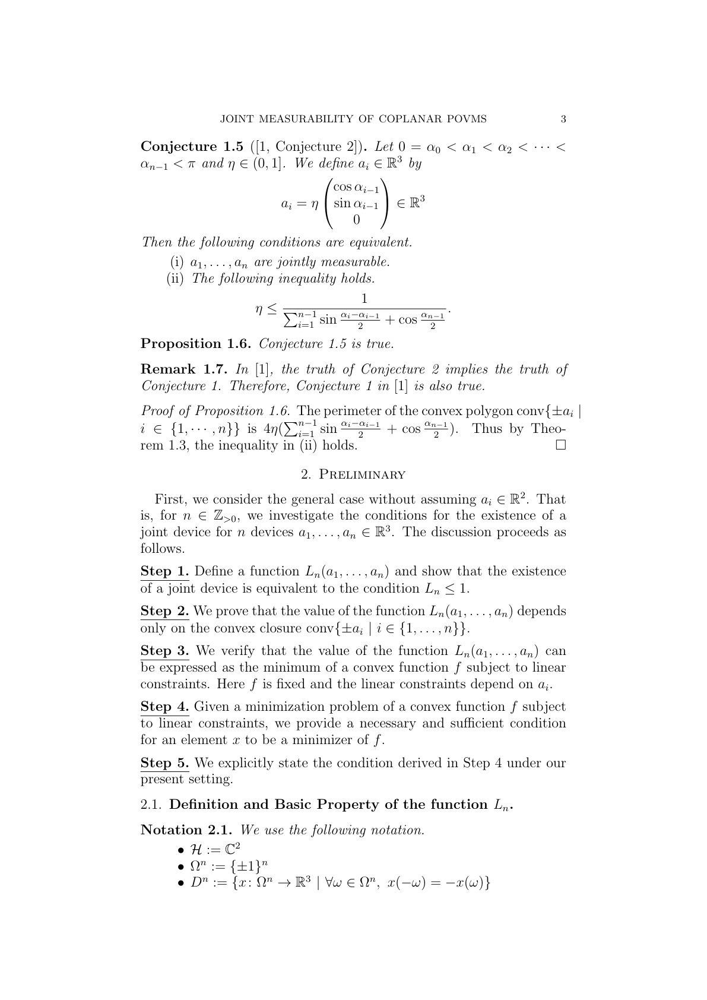
<figcaption class="paper-figure-caption"><b>Fig 2.</b> Low-resolution page preview, page 3</figcaption>
</figure>
<figure class="paper-figure-card">
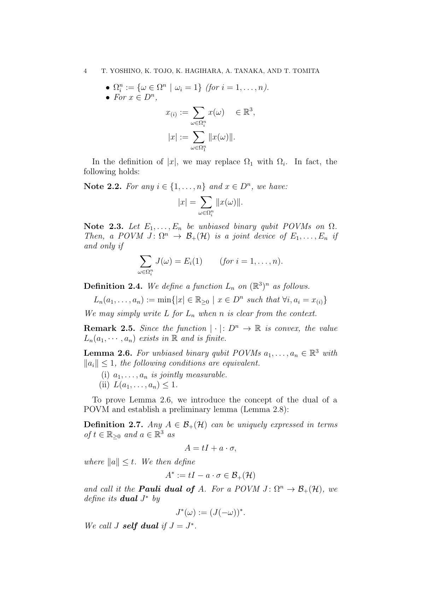
<figcaption class="paper-figure-caption"><b>Fig 3.</b> Low-resolution page preview, page 4</figcaption>
</figure>
<figure class="paper-figure-card">
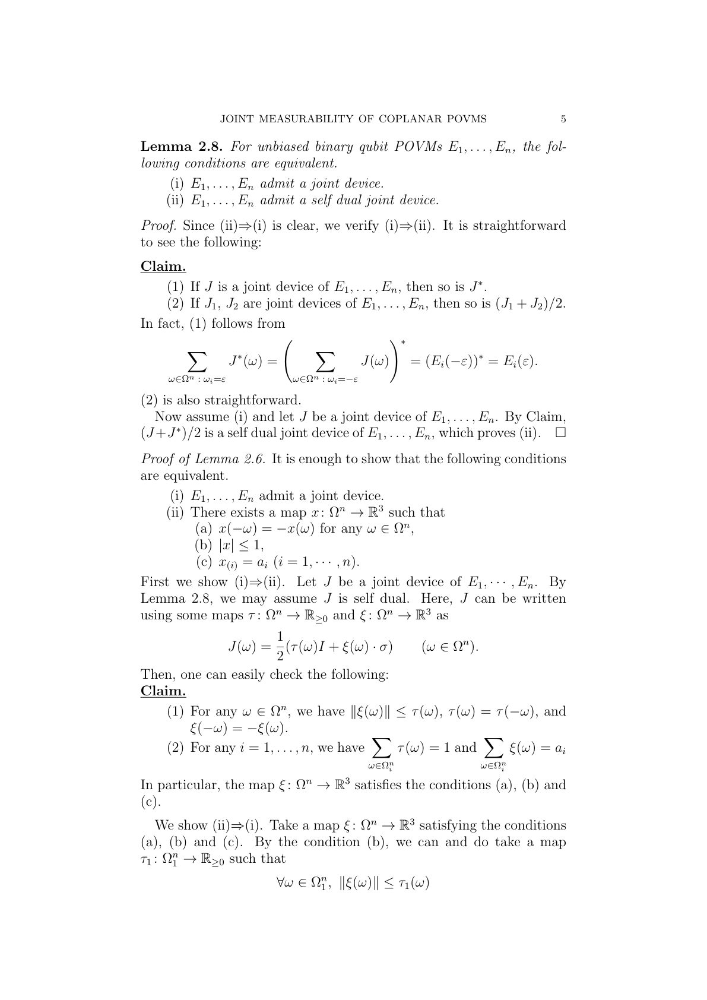
<figcaption class="paper-figure-caption"><b>Fig 4.</b> Low-resolution page preview, page 5</figcaption>
</figure>
<figure class="paper-figure-card">
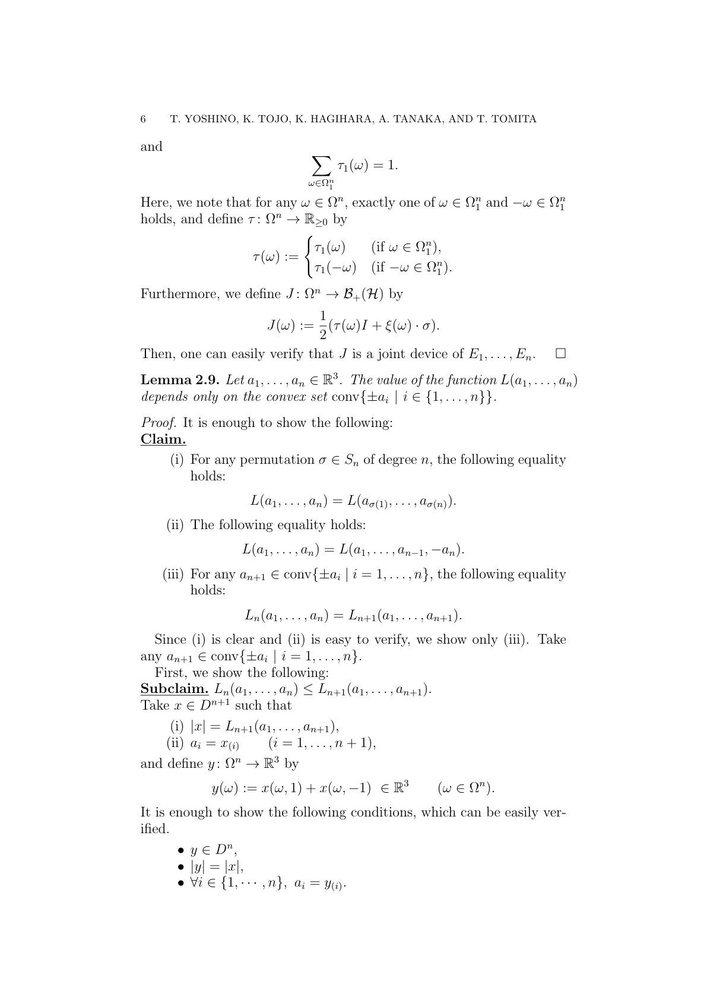
<figcaption class="paper-figure-caption"><b>Fig 5.</b> Low-resolution page preview, page 6</figcaption>
</figure>
</div>

<p><strong>Summary.</strong> This paper establishes a precise geometric criterion for determining when multiple quantum measurements (POVMs) on a qubit can be performed simultaneously (jointly measured). It proves that for coplanar measurements, joint measurability is equivalent to the perimeter of the convex hull of the associated Bloch vectors being at most 4. The methodology combines quantum information theory with advanced convex optimization techniques.</p>
<p><strong>Why it may be interesting.</strong> This work provides fundamental geometric constraints on the compatibility of quantum measurements, which is crucial for designing quantum information protocols and understanding measurement limitations.</p>
<details>
<summary>Detailed structure</summary>
<p><strong>Main problem.</strong> The paper determines the necessary and sufficient conditions for the joint measurability (compatibility) of multiple unbiased binary qubit Positive Operator-Valued Measures (POVMs).</p>
<p><strong>Main result.</strong> For coplanar POVMs, joint measurability is equivalent to the perimeter of the convex closure of their Bloch vectors being less than or equal to 4.</p>
<p><strong>Method.</strong> The problem is reformulated as a convex optimization problem involving minimizing a norm subject to linear constraints derived from the POVM structure.</p>
<p><strong>Model / system.</strong> The system involves unbiased binary qubit POVMs, which are characterized by their corresponding Bloch vectors $\mathbf{a}_i \in \mathbb{R}^3$. The analysis focuses on the geometric arrangement of these vectors.</p>
<p><strong>Key observables.</strong> The Bloch vectors $\mathbf{a}_i$, the perimeter of the convex hull $\text{conv}\{\pm \mathbf{a}_i\}$, and the function $L(\mathbf{a}_1, \dots, \mathbf{a}_n)$.</p>
<p><strong>Important parameters / regimes.</strong> The dimension of the space (2D vs 3D) and the value of the perimeter relative to 4 (or $L_n \le 1$ in general).</p>
<p><strong>Assumptions / limitations.</strong> The analysis initially focuses on the case where the Bloch vectors are coplanar ($\mathbb{R}^2$), and later relies on general convex optimization theory.</p>
<p><strong>Figures summary.</strong> Not specified in the notes.</p>
<p><strong>Paper structure.</strong> The paper establishes the problem equivalence using minimization techniques, derives the condition for the coplanar case using geometric arguments involving the convex hull, and confirms the result by solving the underlying convex optimization problem.</p>
</details>
<details>
<summary>Abstract</summary>
<p>An unbiased qubit positive operator-valued measure (POVM) can be uniquely expressed in terms of the Bloch vector. We prove that for POVMs with coplanar Bloch vectors, they are jointly measurable if and only if the perimeter of the convex closure of Bloch vectors is less than or equal to 4. Moreover, as a corollary, we give an affirmative answer to the conjecture suggested by [Andrejic-Kunjwal 2020] on the existence of a joint device for POVMs whose Bloch vectors lie on the same circle.</p>
</details>
<p><sub><a href="#top">↑ back to top</a></sub></p>

<p><a id="paper-2609.40248"></a></p>
<h3 id="optimal-purity-estimation-with-incoherent-measurements"><a href="http://arxiv.org/abs/2609.40248v1">Optimal Purity Estimation with Incoherent Measurements</a></h3>
<p><strong>Authors:</strong> Junseo Lee, Chirag Wadhwa<br>
<strong>Type:</strong> theory · <strong>Category:</strong> quantum information and computing · <strong>PDF:</strong> <a href="https://arxiv.org/pdf/2609.40248v1">https://arxiv.org/pdf/2609.40248v1</a><br>
<strong>Analysis basis:</strong> full PDF text, analyzed in chunks
<strong>Topic relevance:</strong> 🔥 <code>quantum measurements</code> <strong>4/5</strong></p>
<div class="figure-strip-hint">↔ Scroll figures horizontally</div>
<div class="paper-figures-scroll">
<figure class="paper-figure-card">
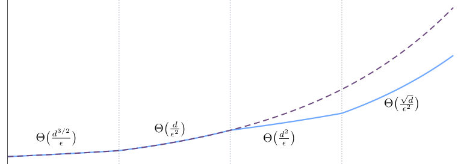
<figcaption class="paper-figure-caption"><b>Fig 1.</b> Figure 1: Demonstration of the copy complexity across the different regimes of ϵ. The non-adaptive curve corresponds to the complexity of Theorem 1.2, while the adaptive one corresponds to Theorem 1.3. For ε ≳d−1, the non-adaptive estimator already attains the optimal adaptive complexity, making the curves coincide. For ε ≪d−1, the adaptive estimator instead outperforms the non-adaptive one, demonstrating a strict separation.</figcaption>
</figure>
</div>

<p><strong>Summary.</strong> This paper determines the minimum number of quantum copies required to estimate the purity of an unknown quantum state with high accuracy using only incoherent measurements. By developing both non-adaptive and adaptive estimators and proving corresponding lower bounds via Gaussian testing, the authors establish the optimal copy complexity scaling for this quantum estimation problem.</p>
<p><strong>Why it may be interesting.</strong> This work provides rigorous complexity bounds for a fundamental quantum estimation task, showing the quantitative advantage of adaptive measurement strategies in the high-precision limit, which is crucial for designing practical quantum protocols.</p>
<details>
<summary>Detailed structure</summary>
<p><strong>Main problem.</strong> The paper addresses the fundamental task of estimating the purity ($  ext{tr}(
ho^2)$) of an unknown quantum state $
ho$ using measurements on multiple copies.</p>
<p><strong>Main result.</strong> It establishes the optimal copy complexity for this estimation using incoherent measurements, showing a minimum complexity of $\Theta\left(\min\left\{ rac{d}{\varepsilon^2} + rac{d^{3/2}}{\varepsilon}, rac{d^2}{\varepsilon} + rac{\sqrt{d}}{\varepsilon^2}
ight\}
ight)$.</p>
<p><strong>Method.</strong> The authors develop and analyze both non-adaptive and adaptive estimation algorithms, deriving lower bounds by reducing the problem to distinguishing between Gaussian distributions via noisy linear queries.</p>
<p><strong>Model / system.</strong> The system involves an unknown quantum state $
ho$ of dimension $d$. The measurement process is restricted to incoherent measurements on multiple copies, contrasting with ideal collective measurements.</p>
<p><strong>Key observables.</strong> Purity ($  ext{tr}(
ho^2)$), the estimated purity $\hat{P}$, and the measurement outcomes $y$ from POVMs.</p>
<p><strong>Important parameters / regimes.</strong> The relative error $\varepsilon$, the dimension $d$, and the number of copies $n$. The analysis distinguishes between regimes like $\varepsilon = o(1/d)$.</p>
<p><strong>Assumptions / limitations.</strong> The analysis relies on simulating POVM measurements using a Bernoulli factory and reducing the quantum problem to a classical Gaussian testing problem.</p>
<p><strong>Figures summary.</strong> Figure 1 illustrates the copy complexity scaling for purity estimation across different regimes of the error parameter $\varepsilon$, comparing non-adaptive and adaptive strategies.</p>
<p><strong>Paper structure.</strong> The paper progresses by first defining the problem and comparing it to the ideal case. It then develops and analyzes non-adaptive and adaptive estimators, providing upper bounds. Finally, it establishes lower bounds by relating the problem to classical Gaussian hypothesis testing, culminating in the optimal complexity characterization.</p>
</details>
<details>
<summary>Abstract</summary>
<p>In this work, we consider the fundamental task of estimating the purity of an unknown state to within $\textit{multiplicative}$ error $\varepsilon$. When one can perform general collective measurements, $Θ\left(\frac{\sqrt{d}}{\varepsilon^2} + \frac{d}{\varepsilon}\right)$ copies are known to be necessary and sufficient for this problem [AISW20]. However, implementing collective measurements on such a large number of copies can be experimentally demanding, and we thus aim to characterize the copy complexity of this problem with incoherent measurements.   In this setting, the only non-trivial result is a non-adaptive algorithm that uses $O\left(   \frac{d}{\varepsilon^2} + \frac{d^2}{\varepsilon}   \right)$ copies [PTTW26], which is polynomially larger than the best-known lower bound. Our first result is a new algorithm performing non-adaptive incoherent measurements that succeeds using $O\left(   \frac{d}{\varepsilon^2} + \frac{d^{3/2}}{\varepsilon}   \right)$ copies, improving on the latter term in the copy complexity. Moreover, we show that for any algorithm restricted to non-adaptive measurements, the above copy complexity is optimal.   We also develop a new adaptive estimator for the purity of a state that improves on the above complexity in the high-precision regime, i.e., for $\varepsilon = o(1/d)$. We also show that the non-adaptive and adaptive estimators together yield the optimal complexity for incoherent purity estimation; in particular, we show that the copy complexity of this problem is $$   Θ\left(\min\left\{   \frac{d}{\varepsilon^2} + \frac{d^{3/2}}{\varepsilon}, \frac{d^2}{\varepsilon} + \frac{\sqrt{d}}{\varepsilon^2}\right\}   \right).   $$</p>
</details>
<p><sub><a href="#top">↑ back to top</a></sub></p>

<p><a id="paper-2609.39621"></a></p>
<h3 id="weakly-measured-loops-for-quantum-amplitude-amplification-oracle-savings-and-adaptive-search-with-unknown-target-probability"><a href="http://arxiv.org/abs/2609.39621v1">Weakly Measured Loops for Quantum Amplitude Amplification: Oracle Savings and Adaptive Search with Unknown Target Probability</a></h3>
<p><strong>Authors:</strong> Wang Fang, Chris Heunen<br>
<strong>Type:</strong> theory · <strong>Category:</strong> quantum information and computing · <strong>PDF:</strong> <a href="https://arxiv.org/pdf/2609.39621v1">https://arxiv.org/pdf/2609.39621v1</a><br>
<strong>Analysis basis:</strong> full PDF text, analyzed in chunks
<strong>Topic relevance:</strong> 🔥 <code>quantum measurements</code> <strong>4/5</strong></p>
<div class="figure-strip-hint">↔ Scroll figures horizontally</div>
<div class="paper-figures-scroll">
<figure class="paper-figure-card">
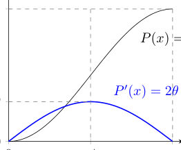
<figcaption class="paper-figure-caption"><b>Fig 1.</b> Figure 1: The target probability P(x) and its derivative P ′(x), whose maximum x∗satisfies (2x∗+1)θ = π/4.</figcaption>
</figure>
<figure class="paper-figure-card">
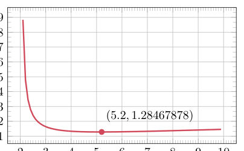
<figcaption class="paper-figure-caption"><b>Fig 2.</b> Figure 2: Limiting normalised cost limp→0 Rp(b) = 2C(b)/π for our adaptive schedule. The analytic expres- sion diverges as b →2+ and has a numerical minimum near b = 5.2, where C(b) ≈2.02.</figcaption>
</figure>
<figure class="paper-figure-card">
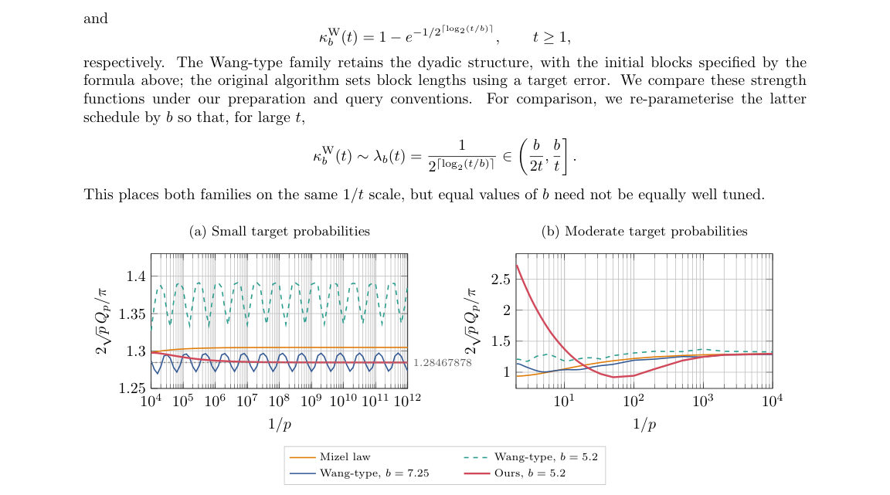
<figcaption class="paper-figure-caption"><b>Fig 3.</b> Figure 3: Finite-p normalised expected cost Rp = 2√p Qp/π for the stated strength laws, with the same preparation and loop convention. Panel (a) uses 81 logarithmically spaced points from 1/p = 104 to 1012; panel (b) extends the comparison to p = 0.49. The Wang-type value b = 7.25 is selected once by the fixed- grid procedure described in the text and held fixed in both panels. Each curve is evaluated using a common tolerance 10−6 for the analytical bound on the omitted normalised cost, with the cutoff chosen as described below.</figcaption>
</figure>
</div>

<p><strong>Summary.</strong> This paper introduces a novel quantum amplitude amplification protocol that enhances Grover's search by incorporating weak measurements within iterative loops. The methodology analyzes the expected oracle cost across regimes where the target probability is known, bounded, or completely unknown. The key finding is that this weak measurement approach provides provable oracle savings, maintaining the optimal $\Theta(1/\sqrt{p})$ scaling while offering explicit control mechanisms.</p>
<p><strong>Why it may be interesting.</strong> This work provides a concrete, mathematically rigorous improvement to quantum search algorithms by integrating weak measurement feedback, which is highly relevant for understanding realistic quantum computation protocols subject to noise or incomplete knowledge.</p>
<details>
<summary>Detailed structure</summary>
<p><strong>Main problem.</strong> To develop quantum amplitude amplification algorithms that improve upon standard Grover search by incorporating tunable weak measurements in iterative loops.</p>
<p><strong>Main result.</strong> The proposed weakly measured loop achieves an expected oracle cost that improves upon standard Grover search, showing a leading constant of $1/\sqrt{2}$ in certain regimes and providing explicit fixed-point control.</p>
<p><strong>Method.</strong> The authors analyze the expected oracle cost by modeling the process as an interleaving of ordinary Grover rotations and weak measurements, solving resulting differential/difference equations in various parameter regimes.</p>
<p><strong>Model / system.</strong> The model is quantum amplitude amplification operating in a two-dimensional subspace, utilizing weak measurements defined by tunable strength $\kappa$ to probe the target subspace.</p>
<p><strong>Key observables.</strong> Expected oracle cost (expected number of Grover iterations), which is analyzed in terms of the target probability $p$.</p>
<p><strong>Important parameters / regimes.</strong> Target probability $p$, weak measurement strength $\kappa$, and the lower bound $p_0$ for the target probability.</p>
<p><strong>Assumptions / limitations.</strong> The analysis assumes the process retains the Grover-type quadratic speedup and relies on bounding omitted tail sums for rigorous proofs.</p>
<p><strong>Figures summary.</strong> Figure 2 plots the normalized expected cost $2C(b)/\pi$ vs. $b$, showing a minimum near $b \approx 5.2$. Figure 3 compares the finite-$p$ normalized expected cost for various adaptive schedules, highlighting the authors' schedule's performance.</p>
<p><strong>Paper structure.</strong> The paper systematically analyzes the expected cost in three regimes: known $p$, lower-bounded $p \ge p_0$, and completely unknown $p$, progressing from exact solutions to adaptive, asymptotic analyses using Gamma functions.</p>
</details>
<details>
<summary>Abstract</summary>
<p>We present a family of quantum amplitude amplification algorithms that interleave ordinary Grover rotations with tunable weak measurements in loops. A successful measurement yields the target state and stops the algorithm, while after a failure, the loop resumes from the post-measurement state without restarting. We express the leading costs in expected Grover iterations as $p \to 0$. For a known target probability $p$, an exact weak measurement-conditioned loop for states near the angle $π/4$ uses $(π/8+1/4+o(1))/\sqrt{p}$ iterations, improving on the standard Grover constant $π/4$ and on optimised restart Grover, and matching the corresponding infimum in our continuous-angle analysis. When only a lower bound $0 < p_0 \leq p < 1/2$ is available, a discrete Lyapunov equation gives the exact expected oracle cost for every fixed measurement strength and a closed-form optimal strength. Using the strength selected from $p_0$, the expected number of Grover iterations is at most $\frac{1}{2\sqrt{2}}(\frac{1}{\sqrt{p}}+\frac{1}{\sqrt{p_0}})$, where the expected cost decreases as the actual $p$ increases, and gives the leading constant $1/\sqrt{2}$ at the promise boundary $p = p_0$. For completely unknown $p$, we identify measurement strength $κ(t)=Θ(1/t)$ as the critical scale within the regular schedules considered here and analyse $κ_b(t)=\min\{1/2,b/t\}$. For each fixed $b > 2$, we rigorously derive a closed-form Gamma-function expression $C(b)$ giving $(C(b)/2+o(1))/\sqrt{p}$ expected iterations. Numerical minimisation of this explicit expression gives $b \approx 5.2$ and $C(b)/2 \approx 1.01$. The results show that weak measurements preserve the $Θ(1/\sqrt{p})$ search scale while adding an explicit fixed-point control mechanism and provable oracle savings.</p>
</details>
<p><sub><a href="#top">↑ back to top</a></sub></p>

<p><a id="paper-2609.38576"></a></p>
<h3 id="normal-ordered-perturbative-expansion-for-matter-systems-interacting-with-continuous-mode-quantum-photon-fields"><a href="http://arxiv.org/abs/2609.38576v1">Normal-ordered perturbative expansion for matter systems interacting with continuous-mode quantum photon fields</a></h3>
<p><strong>Authors:</strong> Liwen Ko, Robert L. Cook, K. Birgitta Whaley<br>
<strong>Type:</strong> theory · <strong>Category:</strong> other · <strong>PDF:</strong> <a href="https://arxiv.org/pdf/2609.38576v1">https://arxiv.org/pdf/2609.38576v1</a><br>
<strong>Analysis basis:</strong> full PDF text, analyzed in chunks
<strong>Topic relevance:</strong> <code>Keldysh / 2PI / non-Gaussian methods</code> <strong>3/5</strong> · <code>Tavis-Cummings &amp; cavity-many-emitter</code> <strong>3/5</strong> · <code>correlated / nonlocal dissipation</code> <strong>3/5</strong> · <code>methods for driven-dissipative</code> <strong>3/5</strong> · <code>driven-dissipative phase transition</code> <strong>2/5</strong> · <code>quantum measurements</code> <strong>2/5</strong> · <code>Dicke superradiance</code> <strong>1/5</strong> · <code>analog quantum simulation</code> <strong>1/5</strong> · <code>non-equilibrium universality</code> <strong>1/5</strong></p>
<div class="figure-strip-hint">↔ Scroll figures horizontally</div>
<div class="paper-figures-scroll">
<figure class="paper-figure-card">
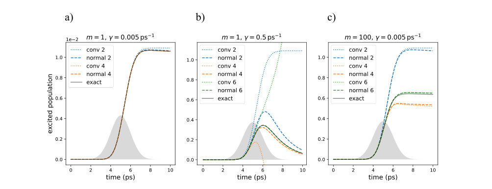
<figcaption class="paper-figure-caption"><b>Fig 1.</b> Figure 1: Comparing the conventional perturbative expansion with the normal-ordered perturbative expan- sion under coherent state input light in three different parameter regimes. In all parameter regimes, the normal-ordered expansions are more accurate than the conventional expansions. In the legends, “conv n” means n-th order conventional expansion. “normal n” means n-th order normal-ordered expansion.</figcaption>
</figure>
<figure class="paper-figure-card">
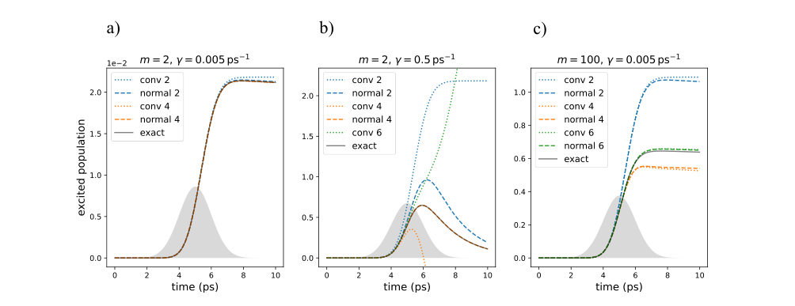
<figcaption class="paper-figure-caption"><b>Fig 2.</b> Figure 2: Comparing the conventional perturbative expansion with the normal-ordered perturbative expan- sion under m-photon Fock state input light in three different parameter regimes. The 2m-th order normal- ordered expansion produces the exact result in all regimes. In all parameter regimes, the normal-ordered expansions are more accurate than the conventional expansions. In the legends, “conv n” means n-th order conventional expansion. “normal n” means n-th order normal-ordered expansion.</figcaption>
</figure>
<figure class="paper-figure-card">
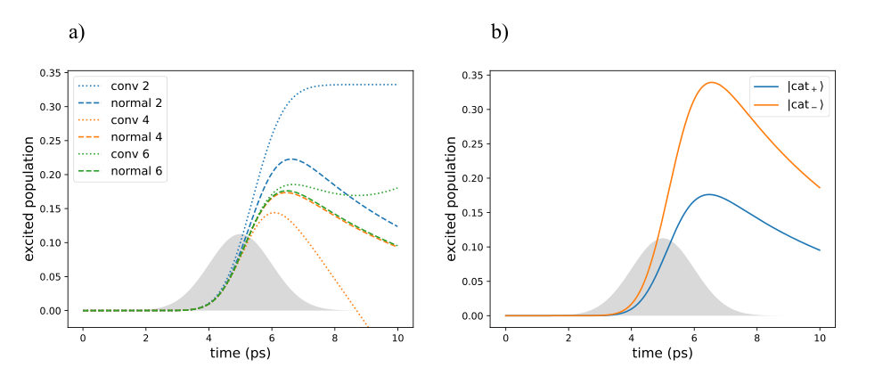
<figcaption class="paper-figure-caption"><b>Fig 3.</b> Figure 3: (a) Excitation probability under the even cat state |cat+⟩, computed with both expansion methods at different orders. The light-matter coupling strength γ is taken to be 0.2 ps−1. The normal-ordered expansion converges much more quickly than the conventional expansion does.</figcaption>
</figure>
</div>

<p><strong>Summary.</strong> This paper introduces a normal-ordered perturbative expansion method to calculate how a matter system evolves when coupled to a quantum light field. This technique is superior to conventional methods because it converges much faster at strong coupling strengths and correctly accounts for quantum effects missed by simpler approximations. It provides a robust theoretical framework for modeling light-matter interactions in quantum regimes.</p>
<p><strong>Why it may be interesting.</strong> This work provides a powerful, systematic, and highly convergent theoretical tool for analyzing open quantum systems where the coupling to a quantum bath (like the vacuum or a cavity field) is strong, which is central to quantum optics and cavity QED.</p>
<details>
<summary>Detailed structure</summary>
<p><strong>Main problem.</strong> The paper develops a specialized perturbative expansion to accurately compute the reduced dynamics of a matter system coupled to a continuous-mode quantum photon field.</p>
<p><strong>Main result.</strong> The normal-ordered expansion converges significantly faster than conventional methods, extending applicability to larger coupling strengths, and it provides an exact description for specific input states like $m$-photon Fock states.</p>
<p><strong>Method.</strong> The core method is deriving a normal-ordered perturbative expansion for the reduced density matrix, which automatically handles field correlation functions and yields a master equation consistent with known quantum dynamics.</p>
<p><strong>Model / system.</strong> The system models a general matter system coupled to a continuous-mode quantum photon field via a dipole-electric field interaction. The dynamics are governed by the total Hamiltonian, and the goal is to find the time evolution of the reduced system density matrix, $\rho_{sys}(t)$.</p>
<p><strong>Key observables.</strong> The reduced system density matrix $\rho_{sys}(t)$, and the spontaneous emission term derived from the expansion.</p>
<p><strong>Important parameters / regimes.</strong> The light-matter coupling strength, and the input photon state (e.g., coherent state, $m$-photon Fock state, cat state).</p>
<p><strong>Assumptions / limitations.</strong> The derivation assumes the initial total state is a product state, and the method is designed to overcome the limitations of the conventional expansion at strong coupling.</p>
<p><strong>Figures summary.</strong> Figures illustrate Feynman diagrams representing the pathways contributing to the perturbative expansion at 2nd, 4th, and 6th orders, detailing the structure of the interaction superoperators.</p>
<p><strong>Paper structure.</strong> The paper progresses by first establishing the need for a normal-ordered approach, deriving the general form of the expansion, and then systematically calculating the contributions to the master equation order-by-order, comparing the results to known exact master equations.</p>
</details>
<details>
<summary>Abstract</summary>
<p>We develop a normal-ordered perturbative expansion method to compute the reduced dynamics of a matter system interacting with a general continuous-mode photon field state. In this expansion, all field correlation functions are automatically normal-ordered, while the free evolution is modified by spontaneous emission. Our normal-ordered expansion elucidates the physical meaning of non-normal-ordered correlation terms in the conventional expansion. Furthermore, under intermediate coupling strengths, the normal-ordered expansion converges significantly faster than the conventional expansion, allowing one to extend the applicability of perturbative expansion to much larger matter-light coupling strengths. Interestingly, given an $m$-photon Fock state input, the normal-ordered expansion truncates exactly at the $2m$-th order. For special classes of input states, we show the normal-ordered expansion is consistent with the corresponding master equations. We demonstrate the normal-ordered expansion numerically for a two-level system interacting with coherent state, $m$-photon Fock state, and cat state inputs.</p>
</details>
<p><sub><a href="#top">↑ back to top</a></sub></p>

<p><a id="paper-2609.40328"></a></p>
<h3 id="bath-assisted-cooling-without-resets"><a href="http://arxiv.org/abs/2609.40328v1">Bath-assisted cooling without resets</a></h3>
<p><strong>Authors:</strong> Xie-Hang Yu, Zherui Chen, Lin Lin<br>
<strong>Type:</strong> theory · <strong>Category:</strong> other · <strong>PDF:</strong> <a href="https://arxiv.org/pdf/2609.40328v1">https://arxiv.org/pdf/2609.40328v1</a><br>
<strong>Analysis basis:</strong> full PDF text, analyzed in chunks
<strong>Topic relevance:</strong> <code>analog quantum simulation</code> <strong>3/5</strong> · <code>correlated / nonlocal dissipation</code> <strong>3/5</strong> · <code>driven-dissipative phase transition</code> <strong>3/5</strong> · <code>methods for driven-dissipative</code> <strong>3/5</strong> · <code>Keldysh / 2PI / non-Gaussian methods</code> <strong>2/5</strong> · <code>non-equilibrium universality</code> <strong>2/5</strong> · <code>quantum measurements</code> <strong>2/5</strong></p>
<div class="figure-strip-hint">↔ Scroll figures horizontally</div>
<div class="paper-figures-scroll">
<figure class="paper-figure-card">
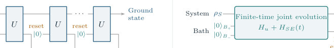
<figcaption class="paper-figure-caption"><b>Fig 1.</b> FIG. 1. Two organizations of cooling. Left: previous repeated cooling rounds with freshly reset bath modes can realize a dissipative evolution. Right: we design one continuous joint evolution with a finite coherent bath. The system approaches its interacting ground state for every input ρS, while the bath retains the input entropy and information. The distinction lies in the joint dynamics during the system–bath evolution.</figcaption>
</figure>
<figure class="paper-figure-card">
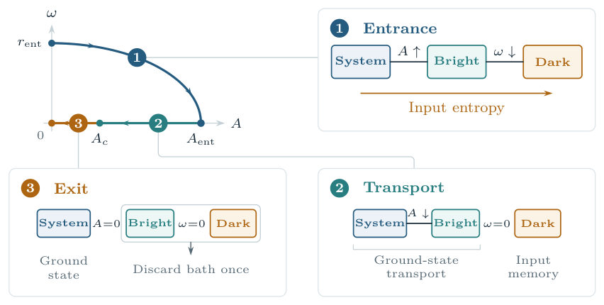
<figcaption class="paper-figure-caption"><b>Fig 2.</b> FIG. 2. Three-stage cooling control path (A(t), ω(t)) in the rotating frame. The numbered points on the control path connect to the corresponding stage diagrams. Entrance transfers input entropy to the dark sector; transport follows the system–bright ground-state branch while the dark sector remains decoupled; exit releases the system and discards the bath. The state labels describe the ideal limit.</figcaption>
</figure>
</div>

<p><strong>Summary.</strong> This paper introduces a novel, single-contact quantum cooling mechanism to prepare a system's ground state from any mixed state. It achieves this by coherently transferring entropy into a bath that is only discarded at the end, avoiding the need for repeated resets. The protocol is rigorously proven for gapped fermionic systems and operates in polylogarithmic time.</p>
<p><strong>Why it may be interesting.</strong> This work provides a highly controlled, non-Markovian framework for quantum state preparation, which is crucial for implementing quantum simulations or quantum computation protocols where state purity is paramount.</p>
<details>
<summary>Detailed structure</summary>
<p><strong>Main problem.</strong> The paper addresses the challenge of cooling an arbitrary mixed quantum state to its pure ground state by transferring entropy to an environment (bath) without requiring repeated bath resets.</p>
<p><strong>Main result.</strong> A novel, single-contact, non-Markovian cooling protocol is rigorously developed that achieves ground-state preparation in polylogarithmic physical time relative to system size and desired accuracy.</p>
<p><strong>Method.</strong> The method involves designing a time-dependent, coherent system-bath coupling Hamiltonian that guides the system through three controlled stages: Entrance, Transport, and Exit.</p>
<p><strong>Model / system.</strong> The analysis is applied to weakly interacting, gapped fermionic systems on a lattice, modeled by a system Hamiltonian $H_u$ coupled to an environment bath via $H_{SE}(t)$.</p>
<p><strong>Key observables.</strong> The primary observable is the fidelity of the final state $
ho_{out}$ to the true ground state $|G
angle$, quantified by the trace-norm error $\epsilon$.</p>
<p><strong>Important parameters / regimes.</strong> The time scale $    au$ scales polylogarithmically with $N/\epsilon$, and the control strength must be parametrically larger than the local energy scale $\Lambda$ of the system.</p>
<p><strong>Assumptions / limitations.</strong> The system Hamiltonian must be geometrically local and gapped, and the analysis relies on bounding errors across multiple sequential, controlled evolution stages.</p>
<p><strong>Figures summary.</strong> Figure 1 compares previous multi-round cooling protocols with the proposed single continuous joint evolution. Figure 2 illustrates the three-stage control path (Entrance, Transport, Exit) governing the time-dependent coupling.</p>
<p><strong>Paper structure.</strong> The paper develops the protocol by defining the total Hamiltonian, detailing the three sequential control stages (Entrance, Transport, Exit) required for the evolution, and finally providing rigorous mathematical bounds on the accumulated leakage and error across these stages.</p>
</details>
<details>
<summary>Abstract</summary>
<p>Cooling an arbitrary mixed state to a pure ground state requires transferring its entropy to an environment. Can a single coherent bath contact accomplish this without repeated bath resets? We develop a new cooling mechanism that transfers the input information into bath degrees of freedom that subsequently decouple, while the system and the remaining bath follow a ground-state path. The bath is discarded only at the end, and the system Hamiltonian remains on and unmodified throughout. We rigorously realize this mechanism for a class of weakly interacting, gapped fermionic systems with local interactions. Starting from any mixed state, our protocol prepares the interacting ground state in total physical time polylogarithmic in the system size and inverse global trace-norm error. It uses two initially empty bath modes per system mode and a single pulse shared across all onsite system--bath couplings. The same pulse prepares each admissible system's own ground state without knowledge of its microscopic parameters. The guarantees follow directly from a non-Markovian system--bath dynamics without an effective Lindbladian description.</p>
</details>
<p><sub><a href="#top">↑ back to top</a></sub></p>

<p><a id="paper-2609.38724"></a></p>
<h3 id="ergotropy-from-energetic-coherence-and-the-third-law-of-thermodynamics"><a href="http://arxiv.org/abs/2609.38724v1">Ergotropy from energetic coherence and the third law of thermodynamics</a></h3>
<p><strong>Authors:</strong> O. S. Yáñez-Soria, G. Guarnieri, B. Çakmak, R. Román-Ancheyta<br>
<strong>Type:</strong> theory · <strong>Category:</strong> statistical mechanics · <strong>PDF:</strong> <a href="https://arxiv.org/pdf/2609.38724v1">https://arxiv.org/pdf/2609.38724v1</a><br>
<strong>Analysis basis:</strong> full PDF text, analyzed in chunks
<strong>Topic relevance:</strong> <code>driven-dissipative phase transition</code> <strong>3/5</strong> · <code>methods for driven-dissipative</code> <strong>3/5</strong> · <code>non-equilibrium universality</code> <strong>3/5</strong> · <code>scars &amp; prethermalization</code> <strong>3/5</strong> · <code>analog quantum simulation</code> <strong>2/5</strong> · <code>quantum measurements</code> <strong>2/5</strong> · <code>Keldysh / 2PI / non-Gaussian methods</code> <strong>1/5</strong> · <code>correlated / nonlocal dissipation</code> <strong>1/5</strong></p>
<div class="figure-strip-hint">↔ Scroll figures horizontally</div>
<div class="paper-figures-scroll">
<figure class="paper-figure-card">
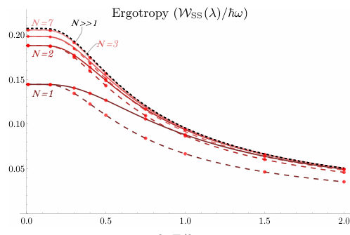
<figcaption class="paper-figure-caption"><b>Fig 1.</b> FIG. 1. Steady-state ergotropy [Eq. (8)] of the qubit battery as a function of the bath temperature for clusters of N qubits (dashed lines) and N oscillators (solid lines), N = 1, 2, 3, 7, with the couplings fixed by Eq. (10). The uppermost short- dashed line is the large-cluster limit, Eq. (11), which is com- mon to both reservoirs. Note that Eq. (10) is the optimum for N ≫1; the finite-N curves are not individually optimized.</figcaption>
</figure>
<figure class="paper-figure-card">

<figcaption class="paper-figure-caption"><b>Fig 2.</b> Figure 1 shows that the ergotropy is largest at T = 0, remains on a plateau over a finite range of low temper- atures, and vanishes for kBT/ℏω ≫1. For finite N the decay with temperature is slower for oscillator baths than for qubit baths. To understand the latter we approximate both thermal occupations by the single high-temperature form [39]</figcaption>
</figure>
<figure class="paper-figure-card">
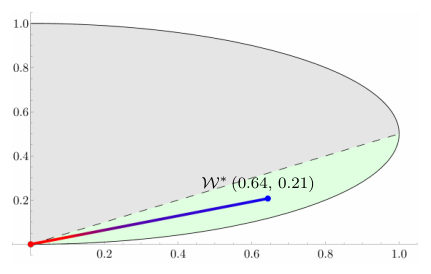
<figcaption class="paper-figure-caption"><b>Fig 3.</b> FIG. 3. Allowed ergotropy of a qubit as a function of its l1- norm of coherence, bounded by Eq. (16) and its lower coun- terpart. The track from blue (T = 0) to red (kBT/ℏω ≫1) is the optimized steady-state ergotropy, W∗ SS(T), with zero- temperature coordinates (C, W∗/ℏω) = (0.64, 0.21). Note that the horizontal axis is the dimensionless l1-norm, not the energy-scaled coherence C = ℏω</figcaption>
</figure>
<figure class="paper-figure-card">
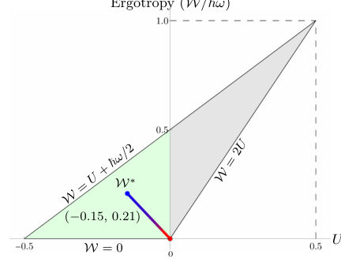
<figcaption class="paper-figure-caption"><b>Fig 4.</b> FIG. 2. Allowed ergotropy of a qubit as a function of its internal energy, Eq. (15), in units of ℏω. The track from blue (T = 0) to red (kBT ≫ℏω) is the optimized steady- state W∗ SS(T) of Eq. (11), with zero-temperature coordinates (U ∗/ℏω, W∗/ℏω) = (−0.15, 0.21).</figcaption>
</figure>
<figure class="paper-figure-card">
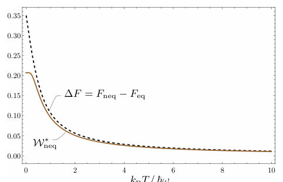
<figcaption class="paper-figure-caption"><b>Fig 5.</b> FIG. 5. Nonequilibrium free-energy difference ∆F = Fneq − Feq (black dashed line) and optimized ergotropy W∗ neq of Eq. (11) (brown solid line), in units of ℏω. The inequality ∆F ≥Wneq [18] holds at all temperatures. ∆F has a clear finite slope at T = 0, Eq. (21), whereas W∗ neq is flat.</figcaption>
</figure>
</div>

<p><strong>Summary.</strong> This paper models a quantum battery charging process by coupling a qubit to a thermal bath. It calculates the extractable work, or ergotropy, finding that this work plateaus at low temperatures, a behavior linked to the third law of thermodynamics. The study provides analytical insights into how coherence drives energy extraction in non-equilibrium steady states.</p>
<p><strong>Why it may be interesting.</strong> This work connects non-equilibrium thermodynamics (ergotropy, steady states) directly to fundamental laws like the third law, using a controllable quantum system model (qubit battery) that is relevant to open quantum systems research.</p>
<details>
<summary>Detailed structure</summary>
<p><strong>Main problem.</strong> The study investigates the ergotropy and thermodynamic potentials of a qubit battery charged by thermal interactions, focusing on the role of energetic coherence and the third law of thermodynamics.</p>
<p><strong>Main result.</strong> The ergotropy exhibits a plateau at low temperatures, which is traced to the third law of thermodynamics, showing proportionality to the equilibrium enthalpy. The charged state is a non-equilibrium steady state sustained by work.</p>
<p><strong>Method.</strong> The analysis uses a quantum collision model framework, solving the Lindblad master equation to find steady-state expectation values for coherence and ergotropy.</p>
<p><strong>Model / system.</strong> The system is a qubit battery (two-level system) coupled to a bath composed of clusters of ancillas (qubits or oscillators) via a composite interaction Hamiltonian. The dynamics are described by a Lindblad master equation.</p>
<p><strong>Key observables.</strong> Ergotropy (W), Steady-State Coherence (SSC), Internal Energy (U), and the work cost required for charging.</p>
<p><strong>Important parameters / regimes.</strong> Bath statistics parameter (lambda), temperature (T), and cluster size (N). The large-cluster limit (N &gt;&gt; 1) is a key regime.</p>
<p><strong>Assumptions / limitations.</strong> The analysis assumes weak-coupling dynamics leading to a Markovian limit, and that the bath is in a Gibbs state.</p>
<p><strong>Figures summary.</strong> Figures illustrate the steady-state ergotropy vs. temperature, showing the low-T plateau, and compare the scaling of coherence (exponential) versus ergotropy (linear) with system size.</p>
<p><strong>Paper structure.</strong> The paper develops the dynamics using a master equation, calculates steady-state coherence and ergotropy in closed form for finite and large clusters, and analyzes the temperature dependence and thermodynamic implications, particularly linking the low-T plateau to the third law.</p>
</details>
<details>
<summary>Abstract</summary>
<p>We study the ergotropy and the thermodynamic potentials of a qubit battery charged by repeated interactions with clusters of thermal ancillas, qubits or oscillators, through a composite system-bath coupling that generates steady-state coherence in the energy basis. A single parameter encoding the bath quantum statistics yields the coherence and ergotropy in closed form for any cluster size. For large clusters, the ergotropy becomes independent of the bath statistics and, at optimal couplings, reaches a universal fraction of the equilibrium internal energy of the qubit at the bath temperature. Since the charged state has no population inversion, all extractable work comes from coherence. The ergotropy is flat at low temperatures. We trace this plateau to the third law, and show that the ergotropy is proportional to the equilibrium enthalpy of the qubit, whose slope vanishes with the heat capacity. For a battery composed of multiple qubits, the coherence grows exponentially with the number of qubits while the ergotropy grows linearly, both remaining a nearly constant fraction of their respective maxima. The charged state is a non-equilibrium steady state with finite entropy at zero temperature, sustained by the work of switching the collisional interaction on and off. The cost is nonzero whenever the parallel coupling is nonzero, and, unlike the ergotropy, it depends on the bath statistics.</p>
</details>
<p><sub><a href="#top">↑ back to top</a></sub></p>

<p><a id="paper-2609.38944"></a></p>
<h3 id="frequency-comb-generation-in-active-optomechanical-cavities"><a href="http://arxiv.org/abs/2609.38944v1">Frequency comb generation in active optomechanical cavities</a></h3>
<p><strong>Authors:</strong> Madhurendra Mishra, Adarsh Ganesan<br>
<strong>Type:</strong> theory · <strong>Category:</strong> other · <strong>PDF:</strong> <a href="https://arxiv.org/pdf/2609.38944v1">https://arxiv.org/pdf/2609.38944v1</a><br>
<strong>Analysis basis:</strong> full PDF text, analyzed in chunks
<strong>Topic relevance:</strong> <code>driven-dissipative phase transition</code> <strong>3/5</strong> · <code>methods for driven-dissipative</code> <strong>3/5</strong> · <code>analog quantum simulation</code> <strong>2/5</strong> · <code>interference shaping light</code> <strong>2/5</strong> · <code>non-equilibrium universality</code> <strong>2/5</strong> · <code>quantum measurements</code> <strong>2/5</strong> · <code>Keldysh / 2PI / non-Gaussian methods</code> <strong>1/5</strong> · <code>Tavis-Cummings &amp; cavity-many-emitter</code> <strong>1/5</strong> · <code>correlated / nonlocal dissipation</code> <strong>1/5</strong> · <code>superradiant laser</code> <strong>1/5</strong></p>
<div class="figure-strip-hint">↔ Scroll figures horizontally</div>
<div class="paper-figures-scroll">
<figure class="paper-figure-card">
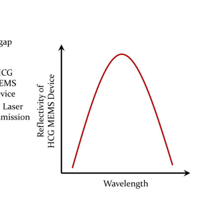
<figcaption class="paper-figure-caption"><b>Fig 1.</b> FIG. 1. Schematic of the electrically pumped VCSEL–MEMS active optomechanical cavity.</figcaption>
</figure>
<figure class="paper-figure-card">
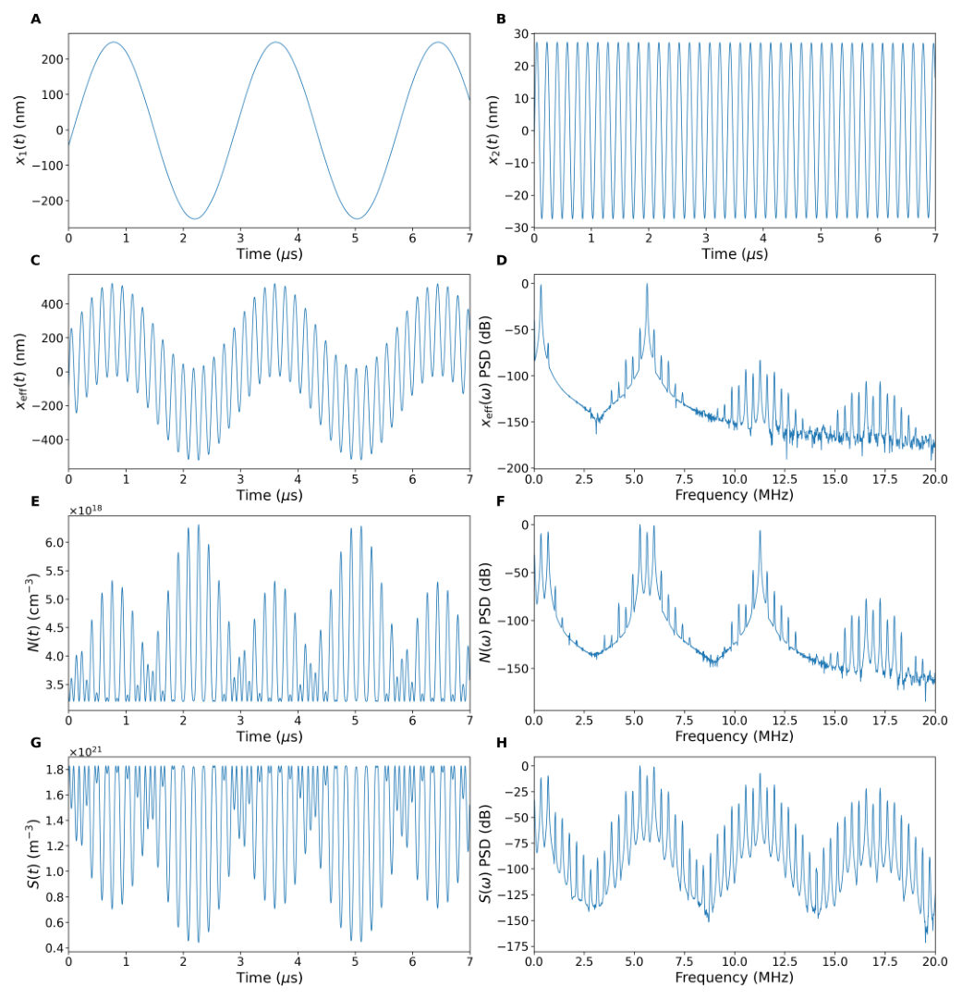
<figcaption class="paper-figure-caption"><b>Fig 2.</b> FIG. 2. Coupled mechanical and laser dynamics at f1 = 353.6 kHz, f2 = 5.636 MHz, Q1 = 6000, and Q2 = 10000. (A) Displacement x1(t), (B) displacement x2(t), (C) effective displacement xeff(t) = χ1x1 +χ2x2, and (D) its spectrum. (E) Carrier density N(t) and (F) its spectrum. (G) Photon density S(t) and (H) its spectrum, exhibiting frequency-comb structure.</figcaption>
</figure>
<figure class="paper-figure-card">
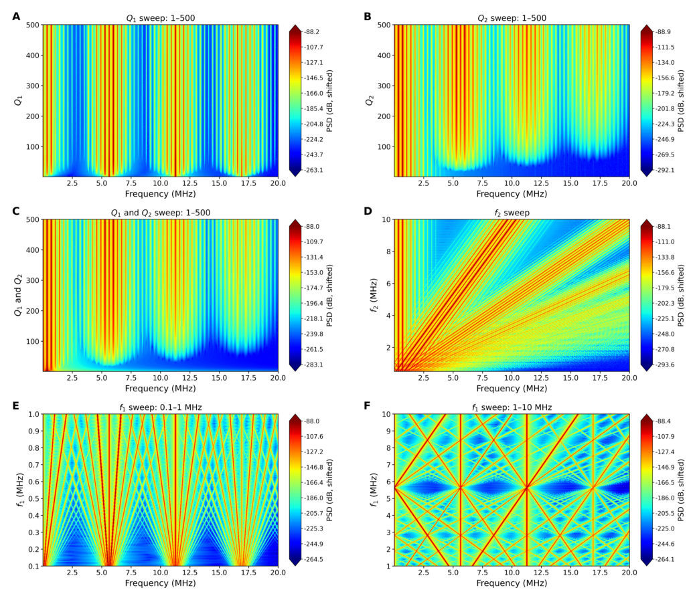
<figcaption class="paper-figure-caption"><b>Fig 3.</b> FIG. 3. Dependence of the photon-density frequency comb on mechanical parameters. (A) Q1 sweep, (B) Q2 sweep, (C) simultaneous Q1 = Q2 sweep, (D) f2 sweep, (E) f1 = 0.1–1 MHz sweep, and (F) f1 = 1–10 MHz sweep.</figcaption>
</figure>
<figure class="paper-figure-card">
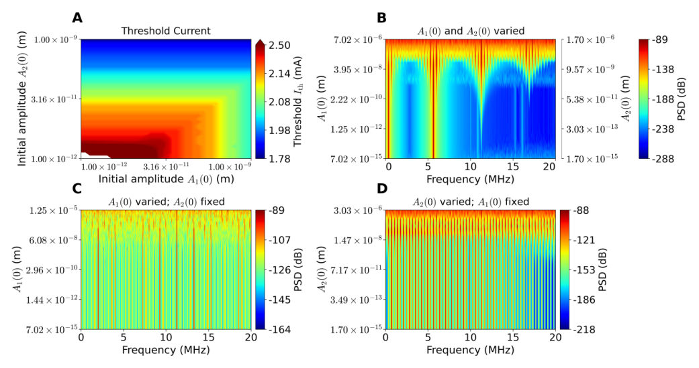
<figcaption class="paper-figure-caption"><b>Fig 4.</b> FIG. 4. Dependence of the threshold current and photon-density frequency comb on the initial mechanical amplitudes. (A) Threshold current Ith as a function of A1(0) and A2(0) in a zoomed region of the parameter space. (B) Spectral evolution under simultaneous variation of A1(0) and A2(0). (C) Variation of A1(0) at fixed A2(0). (D) Variation of A2(0) at fixed A1(0).</figcaption>
</figure>
</div>

<p><strong>Summary.</strong> This paper numerically models frequency comb generation in an active optomechanical cavity formed by a VCSEL coupled to a MEMS mirror. By analyzing the coupled dynamics, the authors demonstrate that the resulting optical spectrum is a comb whose detailed structure is governed by the mechanical damping, resonance frequencies, and initial excitation levels. This work is significant for understanding controlled, nonlinear light sources in integrated quantum optics platforms.</p>
<p><strong>Why it may be interesting.</strong> This work directly addresses nonlinear cavity dynamics and optomechanical coupling, which are central themes in cavity QED and open quantum systems. The detailed mapping of spectral features to mechanical parameters provides a rich platform for understanding quantum light sources.</p>
<details>
<summary>Detailed structure</summary>
<p><strong>Main problem.</strong> The paper investigates the generation of optical frequency combs in an active optomechanical cavity system.</p>
<p><strong>Main result.</strong> The system self-sustainably generates a frequency comb whose structure is highly dependent on mechanical dissipation, resonance frequencies, and initial excitation amplitudes.</p>
<p><strong>Method.</strong> The study uses numerical simulations to solve coupled rate equations describing mechanical motion, carrier density, and photon density.</p>
<p><strong>Model / system.</strong> The physical system is an electrically pumped VCSEL coupled to two mechanical modes of a suspended MEMS mirror. The dynamics are modeled by coupling the mechanical oscillators to the cavity photon and carrier dynamics via radiation-pressure feedback.</p>
<p><strong>Key observables.</strong> Frequency-comb structure in the photon-density spectrum, threshold current ($I_{th}$), and relative spectral intensities of comb lines.</p>
<p><strong>Important parameters / regimes.</strong> Mechanical quality factors ($Q_j$), mechanical resonance frequencies ($f_j$), and initial mechanical amplitudes ($A_j(0)$).</p>
<p><strong>Assumptions / limitations.</strong> The model neglects direct elastic and photothermal coupling, and the calculated spectrum is for the intracavity intensity variable, requiring phase-resolved calculation for full field coherence.</p>
<p><strong>Figures summary.</strong> Figures illustrate the device structure, the time and spectrum of the comb in photon density, and the dependence of the comb structure and threshold current on varying quality factors, resonance frequencies, and initial amplitudes.</p>
<p><strong>Paper structure.</strong> The paper establishes the coupled dynamical model, analyzes the spectral components arising from nonlinear cavity response, and systematically investigates how varying mechanical parameters (dissipation, frequency, initial amplitude) controls the resulting comb structure and the system's operating threshold.</p>
</details>
<details>
<summary>Abstract</summary>
<p>We numerically investigate frequency-comb generation in an electrically pumped vertical-cavity surface-emitting laser coupled to two mechanical modes of a suspended mirror. Displacement-dependent cavity loss and radiation-pressure feedback couple the mechanical motion to the carrier and photon densities, producing harmonics and combination-frequency components in the photon-density spectrum. Mechanical quality factors primarily control the intensity of comb lines, whereas resonance frequencies determine their spectral distribution. The initial mechanical amplitudes influence the threshold current and relative spectral intensities, with the simultaneous excitation of both modes yielding a broader set of observable components. These results establish the dependence of the calculated comb structure on mechanical dissipation, resonance frequencies, and initial conditions in an active optomechanical cavity.</p>
</details>
<p><sub><a href="#top">↑ back to top</a></sub></p>

<p><a id="paper-2609.39299"></a></p>
<h3 id="phase-separation-in-fractonic-fluids-coarsening-interfaces-nucleation-and-hyperuniformity-in-and-out-of-equilibrium"><a href="http://arxiv.org/abs/2609.39299v1">Phase Separation in Fractonic Fluids: Coarsening, Interfaces, Nucleation, and Hyperuniformity in and out of Equilibrium</a></h3>
<p><strong>Authors:</strong> Raphael Maire<br>
<strong>Type:</strong> theory · <strong>Category:</strong> statistical mechanics · <strong>PDF:</strong> <a href="https://arxiv.org/pdf/2609.39299v1">https://arxiv.org/pdf/2609.39299v1</a><br>
<strong>Analysis basis:</strong> full PDF text, analyzed in chunks
<strong>Topic relevance:</strong> <code>Keldysh / 2PI / non-Gaussian methods</code> <strong>3/5</strong> · <code>driven-dissipative phase transition</code> <strong>3/5</strong> · <code>non-equilibrium universality</code> <strong>3/5</strong> · <code>correlated / nonlocal dissipation</code> <strong>2/5</strong> · <code>methods for driven-dissipative</code> <strong>2/5</strong> · <code>scars &amp; prethermalization</code> <strong>2/5</strong> · <code>analog quantum simulation</code> <strong>1/5</strong> · <code>quantum measurements</code> <strong>1/5</strong></p>
<div class="figure-strip-hint">↔ Scroll figures horizontally</div>
<div class="paper-figures-scroll">
<figure class="paper-figure-card">
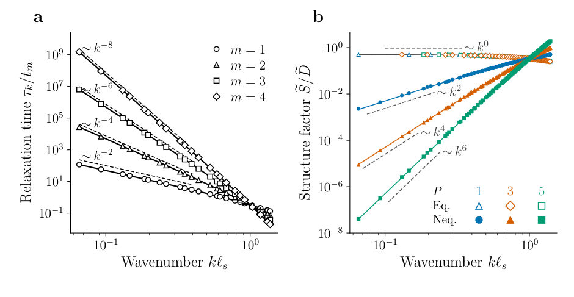
<figcaption class="paper-figure-caption"><b>Fig 1.</b> FIG. 1. Relaxation and stationary fluctuations about a homogeneous density ρ0 = ρs in two dimensions. (a) Relaxation times of weak density perturbations under Eq. (9) with D = 0. Solid curves show τk = 1/λk from Eq. (22). (b) Stationary structure factors at fixed conservation order. Solid curves follow Eq. (24). All figures use f(ρ) = fs[(ρ/ρs)2 −1]2/4, where ρs is a density scale and fs a free-energy density scale. The length and time units are ℓs = p</figcaption>
</figure>
<figure class="paper-figure-card">
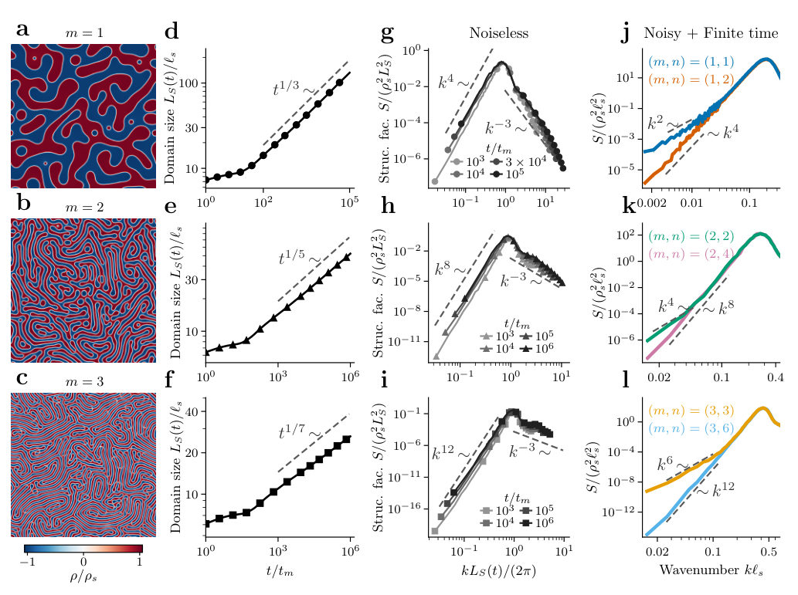
<figcaption class="paper-figure-caption"><b>Fig 2.</b> FIG. 2. Phase separation and coarsening in two dimensions under Eq. (9), with m = 1, 2, 3 from top to bottom. (a–c) Density fields ρ(r)/ρs at t/tm = 104, without noise. The mean density is zero. (d–f) Structure-factor domain size LS(t)/ℓs as a function of time, starting from an almost homogeneous state. (g–i) Radially averaged spectra S/(ρ2 sL2 S) versus kLS/(2π) at the indicated reduced times t/tm, where LS = 2π R S(k)dk/ R kS(k)dk (2π/LS corresponds roughly to the peak of S(k)) and both integrals use kℓs &lt; 1.45. Panels (a–i) use D = 0. (j–l) Spectra eS versus kℓs at fixed m for equilibrium noise (n = m, P = m −1) and nonequilibrium noise (n = 2m, P = 2m −1). Panel (j) uses t/tm = 103 and...</figcaption>
</figure>
<figure class="paper-figure-card">
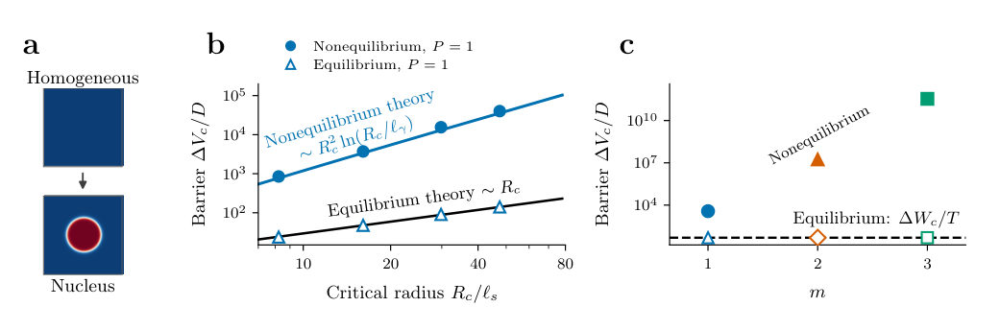
<figcaption class="paper-figure-caption"><b>Fig 3.</b> FIG. 3. Nucleation barriers in two dimensions. Barriers are plotted as ∆Vc/D. Nonequilibrium symbols are finite-domain trial-action estimates obtained by the geometric minimum action method following Ref. 78. (a) A typical nucleation event from a homogeneous state. (b) Dependence of ∆Vc on Rc = γ/∆ω at fixed P = 1, with (m, n) = (1, 2) out of equilibrium and (2, 2) at equilibrium. Increasing radii correspond to ρ0/ρs = −0.97, −0.985, −0.992, −0.995 in reflecting disks with Rbox/ℓs = 1536, 1536, 2048, 8192, respectively. The black solid curve is the equilibrium estimate W(Rc)/T = πγRc/T while the blue solid curve is Eq. (A65). (c) Dependence on the nonequilibrium exponent m, with n = 2m and...</figcaption>
</figure>
<figure class="paper-figure-card">
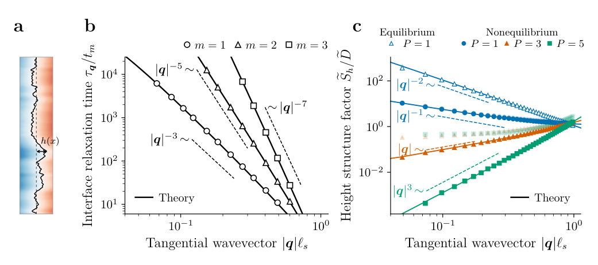
<figcaption class="paper-figure-caption"><b>Fig 4.</b> FIG. 4. Interfacial relaxation and fluctuations in two dimensions, using the free energy and units of Fig. 1. (a) Density snapshot with an interface. (b) Relaxation times τq/tm of weak interface perturbations versus |q|ℓs, for m = 1, 2, 3 and D = 0. Solid curves are the linear predictions for the simulated grid. (c) Profile spectra eSh/ eD versus |q|ℓs, with eSh = Sh/ℓ3 s. Opaque symbols show the spectrum when the interface height is determined by the same projection used theoretically to define h. Faint symbols use density-profile fits. The two methods for extracting h are described in Appendix B 1. Spectra use 2562 retained grids with spacing ℓs, Lx = Ly = 256ℓs, and eD = 10−10.</figcaption>
</figure>
</div>

<p><strong>Summary.</strong> This work develops a theoretical framework for phase separation in exotic 'fractonic fluids' characterized by conserved higher-order multipole moments. It rigorously compares equilibrium and non-equilibrium dynamics, demonstrating that these conservation laws significantly slow down relaxation processes. The findings highlight how non-equilibrium conditions can suppress fluctuations and alter the dynamics of phase separation.</p>
<p><strong>Why it may be interesting.</strong> The explicit comparison between equilibrium and non-equilibrium dynamics, particularly the role of FDT violations, provides a rich theoretical framework applicable to non-equilibrium many-body systems, which is relevant to open quantum systems.</p>
<details>
<summary>Detailed structure</summary>
<p><strong>Main problem.</strong> The paper develops a theory for phase separation in 'fractonic fluids'—fluids conserving higher-order multipole moments—and investigates how these constraints modify coarsening, nucleation, and fluctuation dynamics.</p>
<p><strong>Main result.</strong> Higher-order conservation laws are shown to slow down relaxation processes, while non-equilibrium violations of the Fluctuation-Dissipation Theorem suppress fluctuations and hinder nucleation.</p>
<p><strong>Method.</strong> The analysis uses a coarse-grained hydrodynamic field theory, comparing equilibrium and non-equilibrium dynamics by analyzing the structure factor and relaxation times.</p>
<p><strong>Model / system.</strong> The system is modeled as a fluid described by a scalar density $\rho$ exhibiting 'fractonic behavior' due to higher-order multipole conservation laws. The dynamics are governed by a generalized hydrodynamic equation incorporating noise and deterministic relaxation terms.</p>
<p><strong>Key observables.</strong> Structure factor $S(k, t)$, relaxation time $\tau_k$, characteristic domain size $L_S(t)$, and the activation barrier $\Delta V_c$.</p>
<p><strong>Important parameters / regimes.</strong> The order of multipole conservation ($P$), the Laplacian power ($m$), and the dimensionality ($d$).</p>
<p><strong>Assumptions / limitations.</strong> The theory assumes a local gradient expansion for the stationary measure, and specific scaling assumptions are made in the marginal case ($d=2$) for barrier calculations.</p>
<p><strong>Figures summary.</strong> Figures illustrate relaxation times and stationary structure factors for various conservation orders, and show domain size growth during phase separation, comparing equilibrium and non-equilibrium dynamics.</p>
<p><strong>Paper structure.</strong> The paper develops the hydrodynamic theory, analyzes the comparison between equilibrium (FDT-constrained) and non-equilibrium dynamics, derives scaling laws for relaxation times and activation barriers, and discusses the implications for hyperuniformity.</p>
</details>
<details>
<summary>Abstract</summary>
<p>We develop a theory of phase separation in fluids conserving higher-order multipole moments of a scalar density, and investigate the resulting coarsening dynamics, nucleation, and interfacial fluctuations. We find that higher-order conservation laws slow the relaxation of all phenomena investigated, whereas nonequilibrium violations of the fluctuation--dissipation theorem suppress density and interfacial fluctuations while hindering nucleation. Simulations support these predictions.</p>
</details>
<p><sub><a href="#top">↑ back to top</a></sub></p>

<p><a id="paper-2609.38564"></a></p>
<h3 id="proposal-for-matter-wave-interferometry-with-a-rare-earth-doped-microparticle"><a href="http://arxiv.org/abs/2609.38564v1">Proposal for matter-wave interferometry with a rare-earth-doped microparticle</a></h3>
<p><strong>Authors:</strong> Chris Overstreet<br>
<strong>Type:</strong> both · <strong>Category:</strong> other · <strong>PDF:</strong> <a href="https://arxiv.org/pdf/2609.38564v1">https://arxiv.org/pdf/2609.38564v1</a><br>
<strong>Analysis basis:</strong> full PDF text, analyzed in chunks
<strong>Topic relevance:</strong> <code>analog quantum simulation</code> <strong>3/5</strong> · <code>quantum measurements</code> <strong>2/5</strong> · <code>quantum optics experiment</code> <strong>2/5</strong> · <code>Keldysh / 2PI / non-Gaussian methods</code> <strong>1/5</strong> · <code>QC/QI experiment</code> <strong>1/5</strong> · <code>Tavis-Cummings &amp; cavity-many-emitter</code> <strong>1/5</strong> · <code>correlated / nonlocal dissipation</code> <strong>1/5</strong> · <code>driven-dissipative phase transition</code> <strong>1/5</strong> · <code>interference shaping light</code> <strong>1/5</strong> · <code>methods for driven-dissipative</code> <strong>1/5</strong></p>
<div class="figure-strip-hint">↔ Scroll figures horizontally</div>
<div class="paper-figures-scroll">
<figure class="paper-figure-card">
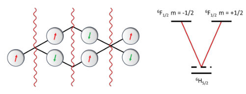
<figcaption class="paper-figure-caption"><b>Fig 1.</b> FIG. 1. Experimental concept. Left: Mach-Zehnder interfer- ometry sequence of a microparticle with embedded rare-earth ion. The rare-earth ion interacts with three optical pulses. The interferometer phase, encoded in the state of the rare- earth ion after the interferometer, is sensitive to the acceler- ation of the microparticle. Right: diagram of Raman transi- tions used to implement the interferometer beam splitter and mirror pulses. The rare-earth ion remains in a state with total angular momentum J = 1/2 throughout the interferometer, which decouples the state of the rare-earth ion from the mi- croparticle’s orientation.</figcaption>
</figure>
<figure class="paper-figure-card">
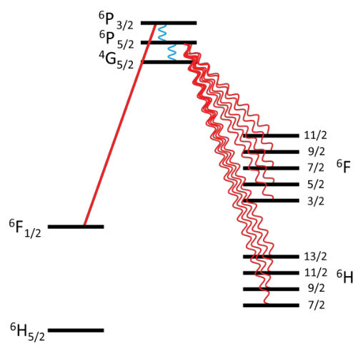
<figcaption class="paper-figure-caption"><b>Fig 2.</b> FIG. 2. Imaging scheme. The samarium ion is initially pumped to the 6P3/2 level, which decays non-radiatively to the 6P5/2 level. This level decays non-radiatively to the 4G5/2 level and radiatively to levels in the 6F and 6H manifolds. These levels can be repumped via 6P3/2 to enable optical cy- cling. Figure is not to scale.</figcaption>
</figure>
<figure class="paper-figure-card">

<figcaption class="paper-figure-caption"><b>Fig 3.</b> FIG. 3. Estimated decoherence rate of 2ℏk interferometer (light blue) and 1000ℏk interferometer (dark blue) due to background gas scattering as a function of microparticle mass, assuming 10−6 Torr pressure at 6 K. Dashed red line: deco- herence rate of 103 s−1, the maximum rate at which coherence can be observed after 1 ms.</figcaption>
</figure>
<figure class="paper-figure-card">

<figcaption class="paper-figure-caption"><b>Fig 4.</b> Fig. 3 shows the estimated decoherence rate due to background gas scattering in an apparatus with buffer gas pressure 10−6 Torr as a function of particle mass for 2ℏk and 1000ℏk beam splitter momentum. The in- terferometer time is chosen to be T = 1 ms. The de- coherence rate of each interferometer has a local maxi- mum where ∆x ≈λHe. For sufficiently massive particles (m &gt; 10−14 kg, corresponding to a microparticle of di- ameter 2 µm), this decoherence rate is slow enough to permit the observation of interference with 1000ℏk beam splitters.</figcaption>
</figure>
<figure class="paper-figure-card">

<figcaption class="paper-figure-caption"><b>Fig 5.</b> FIG. 4. Estimated decoherence rate of 2ℏk interferometer (light blue) and 1000ℏk interferometer (dark blue) due to op- tical photon scattering as a function of microparticle mass. Dashed red line: decoherence rate of 103 s−1, the maximum rate at which coherence can be observed after 1 ms.</figcaption>
</figure>
</div>

<p><strong>Summary.</strong> This paper proposes a novel platform for matter-wave interferometry by embedding rare-earth ions within microparticles. It theoretically addresses the major hurdle of decoherence by showing that increasing the particle mass can suppress environmental decoherence rates. The result establishes a pathway for building quantum sensors capable of testing fundamental physics with unprecedented sensitivity.</p>
<p><strong>Why it may be interesting.</strong> This work is highly relevant as it merges quantum optics, solid-state physics, and quantum sensing. The detailed analysis of decoherence scaling with mass and the use of embedded quantum emitters (rare-earth ions) in solid-state hosts provide a concrete, advanced platform for studying open quantum systems.</p>
<details>
<summary>Detailed structure</summary>
<p><strong>Main problem.</strong> The primary challenge is developing matter-wave interferometry using large, massive particles to enable precise tests of fundamental physics, which is severely limited by decoherence.</p>
<p><strong>Main result.</strong> The proposal demonstrates that using rare-earth ions in microparticles, combined with specific interferometer geometries, allows decoherence rates to decrease or remain constant as particle mass increases, enabling high-precision sensing.</p>
<p><strong>Method.</strong> The work combines theoretical analysis of decoherence mechanisms (from background gas and blackbody radiation) with a proposed experimental setup utilizing optical Raman transitions on embedded rare-earth ions.</p>
<p><strong>Model / system.</strong> The system is a matter-wave interferometer using a microparticle doped with a rare-earth ion (e.g., Sm3+ in SrSe). The interference phase is read out via the quantum state of the ion, and decoherence is modeled by analyzing scattering interactions between the particle and the environment.</p>
<p><strong>Key observables.</strong> Phase sensitivity ($\phi/g$), coherence time ($T$), decoherence rate ($\Gamma$), and the macroscopicity parameter ($\mu$).</p>
<p><strong>Important parameters / regimes.</strong> Microparticle mass ($m$), vacuum level (moderate vacuum), photon count ($\sim 10^3$), and the rare-earth ion's angular momentum state ($J=1/2$).</p>
<p><strong>Assumptions / limitations.</strong> Decoherence due to blackbody radiation is assumed negligible, and the analysis relies on specific limits for the ratio between path separation ($\Delta x$) and momentum exchange wavelength ($\lambda$).</p>
<p><strong>Figures summary.</strong> Figures illustrate the Mach-Zehnder interferometer sequence using Raman transitions and show the calculated decoherence rate due to optical photon scattering as a function of microparticle mass.</p>
<p><strong>Paper structure.</strong> The paper first establishes the need for high-mass interferometry, then details the physical system using rare-earth ions and optical transitions. It proceeds to analyze decoherence from various sources (gas, BBR, optical), deriving theoretical models for the rate dependence on mass and path separation.</p>
</details>
<details>
<summary>Abstract</summary>
<p>Matter-wave interferometers are sensitive probes of low energy physics and have been used for precise tests of gravity and quantum mechanics. These applications would benefit from interfering particles of higher mass, but observing the interference of a large particle is challenging due to the need to control its initial state and to avoid decoherence. Here we propose to demonstrate matter-wave interference of a microparticle with an embedded rare-earth ion. Optical transitions of the rare-earth ion will impart momentum to the microparticle's center of mass. The use of a time-symmetric interferometer geometry and a rare-earth ion state with angular momentum $J = 1/2$ will eliminate sensitivity to the initial conditions of the microparticle. We show that the rates of all relevant external decoherence mechanisms either decrease or remain constant as the microparticle mass is increased, allowing decoherence to be avoided by using sufficiently large particles. An apparatus at moderate vacuum levels will support microparticle interferometry with up to $10^3$ photons per beam splitter and millisecond coherence time. This demonstration will establish microparticle interferometry as a new platform for quantum sensing, improving searches for minimal modifications of quantum mechanics by up to four orders of magnitude in the near term and laying the foundation for future gravitational tests.</p>
</details>
<p><sub><a href="#top">↑ back to top</a></sub></p>

<p><a id="paper-2609.40281"></a></p>
<h3 id="memory-dimension-detection-in-open-quantum-dynamics-via-pseudo-control"><a href="http://arxiv.org/abs/2609.40281v1">Memory dimension detection in open quantum dynamics via pseudo-control</a></h3>
<p><strong>Authors:</strong> Chang Liu, Alexander Yosifov, Ximing Wang, Zhenhuan Liu, Jinzhao Sun<br>
<strong>Type:</strong> theory · <strong>Category:</strong> other · <strong>PDF:</strong> <a href="https://arxiv.org/pdf/2609.40281v1">https://arxiv.org/pdf/2609.40281v1</a><br>
<strong>Analysis basis:</strong> full PDF text, analyzed in chunks
<strong>Topic relevance:</strong> <code>correlated / nonlocal dissipation</code> <strong>3/5</strong> · <code>methods for driven-dissipative</code> <strong>3/5</strong> · <code>driven-dissipative phase transition</code> <strong>2/5</strong> · <code>quantum measurements</code> <strong>2/5</strong> · <code>Keldysh / 2PI / non-Gaussian methods</code> <strong>1/5</strong> · <code>interference shaping light</code> <strong>1/5</strong> · <code>non-equilibrium universality</code> <strong>1/5</strong></p>
<div class="figure-strip-hint">↔ Scroll figures horizontally</div>
<div class="paper-figures-scroll">
<figure class="paper-figure-card">

<figcaption class="paper-figure-caption"><b>Fig 1.</b> FIG. 1. Schematic of the two-interaction process. The red region represents memory retained from the first interaction that can influence the second.</figcaption>
</figure>
<figure class="paper-figure-card">

<figcaption class="paper-figure-caption"><b>Fig 2.</b> FIG. 2. Pseudo-control circuit for detecting memory dimen- sion. From top to bottom, the wires show the control c, aux- iliary system inputs ρ1, ρ2, the input system S with its iso- lated reference R (dashed), and local environmental inputs σ1, σ2. The blue and green boxes denote interaction channels C1 and C2, respectively, while the red wire carries memory with dim Hm = dm. Filled and open circles indicate SWAPs controlled on |1⟩c and |0⟩c, respectively; terminal bars mark discarded outputs. The symbols at right indicate X/Y mea- surements on c and measurement of RS to reconstruct MRS.</figcaption>
</figure>
<figure class="paper-figure-card">

<figcaption class="paper-figure-caption"><b>Fig 3.</b> FIG. 3. Temporal dependence of the resolved rank rϵ. (a) Schematic of the numerical model: two system-environment interactions of duration τ are separated by an interval of du- ration T, with the boundary contact between Sn and E1. (b) rϵ versus interaction time τ for models A-E at λ = 1 and T = 1; the inset shows the short-time regime, and the verti- cal dashed line marks the reference time τ0. (c) rϵ(τ, T) for model D at λ = 1; the white dashed lines indicate the cuts shown in panels (b) and (e). (d) Singular values of MRS for model D at selected interval times; the vertical dashed line marks the threshold ϵ = 10−4. (e) rϵ versus interval time T at λ = 1 and τ = τ0.</figcaption>
</figure>
<figure class="paper-figure-card">

<figcaption class="paper-figure-caption"><b>Fig 4.</b> FIG. 4. Rank rϵ versus coupling strength for two coupling geometries. Models A-E are evaluated at τ = τ0, T = 1, and ϵ = 10−4. (a) Boundary contact coupling between Sn and E1, defined in Eq. (5). (b) Ladder contact coupling each Sj directly to the corresponding Ej, defined in Eq. (6). The vertical dashed line marks λ = 1 used in Fig. 3.</figcaption>
</figure>
<figure class="paper-figure-card">

<figcaption class="paper-figure-caption"><b>Fig 5.</b> FIG. 5. Graphical TN conventions. (a) A scalar. (b) A vector. (c) An operator. (d) Index contraction, illustrated by matrix multiplication. (e) The trace of an operator. (f) A tensor product. (g) A permutation of tensor factors, illustrated by the SWAP map.</figcaption>
</figure>
</div>

<p><strong>Summary.</strong> This paper introduces a novel 'pseudo-control protocol' to estimate the memory dimension of open quantum dynamics. By analyzing the rank of an interference matrix derived from two sequential system-environment interactions, the authors establish a lower bound on the environmental memory. This technique allows for the characterization of complex system-environment interactions in many-body quantum systems without requiring full environmental tomography.</p>
<p><strong>Why it may be interesting.</strong> This work provides a powerful, experimentally accessible diagnostic tool for characterizing complex, non-Markovian environmental coupling in quantum systems, which is crucial for understanding decoherence mechanisms in quantum computation and simulation.</p>
<details>
<summary>Detailed structure</summary>
<p><strong>Main problem.</strong> The paper aims to characterize the memory dimension of open quantum dynamics, which quantifies the essential environmental resources shaping system evolution.</p>
<p><strong>Main result.</strong> A pseudo-control protocol was developed that uses the rank of an interference matrix to establish a lower bound on the memory dimension without full process tomography.</p>
<p><strong>Method.</strong> The protocol involves comparing the system's evolution under two separate interactions separated by a waiting time, generating an interference matrix whose rank is analyzed.</p>
<p><strong>Model / system.</strong> The study focuses on open quantum dynamics involving a system (S) coupled to an environment (E), modeled using Lindblad-type master equations for the evolution during interaction and waiting periods.</p>
<p><strong>Key observables.</strong> The primary observable is the 'resolved rank' ($r_\epsilon$) of the interference matrix (MRS), which provides a lower bound on the memory dimension ($d_m \ge \lceil\sqrt{r_\epsilon}
ceil$).</p>
<p><strong>Important parameters / regimes.</strong> Interaction time ($ au$), interval time ($T$), coupling strength ($\lambda$), and the specific coupling geometry (boundary vs. ladder).</p>
<p><strong>Assumptions / limitations.</strong> The bound derived from the rank is one-sided (high rank $\implies$ large memory, but low rank $
ot\implies$ little memory). The analysis relies on a fixed resolution scale ($\epsilon$).</p>
<p><strong>Figures summary.</strong> Figures illustrate the temporal dependence of the resolved rank ($r_\epsilon$) for various environmental models (A-E) under changes in $    au$ and $T$, and compare the spectral evolution between dissipative (Model C) and coherent (Model E) environments.</p>
<p><strong>Paper structure.</strong> The paper introduces the memory dimension concept, details the pseudo-control protocol and the resulting rank bound, and then applies this method to test various quantum many-body models (Ising, XXZ) under different environmental coupling geometries and time scales.</p>
</details>
<details>
<summary>Abstract</summary>
<p>Characterising open quantum dynamics requires identifying the environmental degrees of freedom that shape the system's evolution. The memory dimension, defined as the size of the smallest effective memory needed to reproduce this influence, quantifies the dynamically relevant environmental resources and provides a common basis for comparing different many-body environments. Here we introduce a pseudo-control protocol that encodes information about the memory dimension in an experimentally accessible interference matrix, whose rank certifies a lower bound on this dimension without direct access to the environment or full process-tensor tomography. Applied to quantum many-body environments, the protocol allows flexible adjustment of the interaction and interval times, revealing how these parameters, environmental dynamics, and system-environment interactions shape detectable memory. Our approach provides a new operational technique for characterising open quantum dynamics and probing the structure of system-environment interactions through their memory signatures.</p>
</details>
<p><sub><a href="#top">↑ back to top</a></sub></p>

<p><a id="paper-2609.39990"></a></p>
<h3 id="minimizing-capture-time-with-many-small-traps-in-heterogeneous-media"><a href="http://arxiv.org/abs/2609.39990v1">Minimizing capture time with many small traps in heterogeneous media</a></h3>
<p><strong>Authors:</strong> Denis S. Grebenkov, Theodore Kolokolnikov<br>
<strong>Type:</strong> theory · <strong>Category:</strong> statistical mechanics · <strong>PDF:</strong> <a href="https://arxiv.org/pdf/2609.39990v1">https://arxiv.org/pdf/2609.39990v1</a><br>
<strong>Analysis basis:</strong> full PDF text, analyzed in chunks
<strong>Topic relevance:</strong> <code>correlated / nonlocal dissipation</code> <strong>3/5</strong> · <code>Keldysh / 2PI / non-Gaussian methods</code> <strong>2/5</strong> · <code>driven-dissipative phase transition</code> <strong>2/5</strong> · <code>methods for driven-dissipative</code> <strong>2/5</strong> · <code>quantum measurements</code> <strong>2/5</strong> · <code>analog quantum simulation</code> <strong>1/5</strong> · <code>non-equilibrium universality</code> <strong>1/5</strong></p>
<div class="figure-strip-hint">↔ Scroll figures horizontally</div>
<div class="paper-figures-scroll">
<figure class="paper-figure-card">

<figcaption class="paper-figure-caption"><b>Fig 1.</b> FIG. 1. Optimal trap distribution with N = 100 and M(r) = r2 inside a unit disk with (i) ω = 1/ |Ω| (top) and (ii) ω = M/ |M| (bottom). Left: trap positions that minimize the Green’s energy (2.35), computed numerically (see text); Middle: the corresponding Voronoi cells. Right: Comparison of numerical approximation of ρ(x) obtained from the Voronoi diagram (see text) shown as “simulation”, with continuum limit (2.41) shown as “theory”.</figcaption>
</figure>
<figure class="paper-figure-card">

<figcaption class="paper-figure-caption"><b>Fig 2.</b> FIG. 2. Optimal trap locations inside an elongated rectangle (0, 10) × (0, 1) with M(x, y) = x, for N = 5, 20 and 80 traps, from top to bottom. Left column: uniform starting distribution ω ≡1/ |Ω|. Right column: ω = µ = M/ |M|. In each panel the strip shows the optimal trap positions together with their Voronoi cells, and the graph below it compares the effective density obtained from the Voronoi cells (dots) with the asymptotic prediction ρ(x) (dashed) from (1.7): ρ(x) = x/100 + 1/20 for the left column and ρ = µ = x/50 for the right. Note that the density is strictly positive everywhere for uniform ω, but vanishes at x = 0 for ω = µ.</figcaption>
</figure>
<figure class="paper-figure-card">

<figcaption class="paper-figure-caption"><b>Fig 3.</b> FIG. 3. Top: Optimal trap locations inside a rectangle (0, 3) × (0, 1), with M(x, y) = tanh(3(1.5 −x)) + 1 (slow on the left, fast on the right), ω = 1/ |Ω| , and with N = 20, ε = 0.05 (so that κ = νN ≈42). Black dots (’full’) correspond to minimizing the full problem (1.2) numerically. Red crosses (’Green’) correspond to the minimization of the Green’s energy (2.35). Top left: color plot shows the corresponding solution u(x, y) of the full problem (1.2) with optimal trap locations, and the corresponding Voronoi cells. Optimal trap locations computed via Green’s energy minimization are also shown. Top right: effective trap density obtained from the two computed configurations, compared with...</figcaption>
</figure>
<figure class="paper-figure-card">

<figcaption class="paper-figure-caption"><b>Fig 4.</b> FIG. 4. Optimal trap configurations in the unit ball for M(r) = tanh(10(0.4 −r)) + 1.1 (a slow core inside a fast shell, with an interface of width ∼0.1 at r = 0.4), with N = 100, 200 and 400 traps (left to right), all at κ = νN = 20, i.e., the strong-trapping regime. Top: the minimizers of the hybrid objective (2.28) for the uniform starting distribution ω ≡1/ |Ω| and for ω = µ, colored according to |xj|. Bottom: the effective densities ρ(xj) ≈1/(N |Vj|) from the Voronoi cells, plotted against |xj|, for the minimizers of the Green’s energy (2.35) (circles) and of the hybrid objective (2.28) (squares), for ω ≡1/ |Ω| (red and black) and for ω = µ (blue and green). For ω ≡1/ |Ω| the curves...</figcaption>
</figure>
<figure class="paper-figure-card">

<figcaption class="paper-figure-caption"><b>Fig 5.</b> Figure 3(top) illustrates the two regimes for Ω= (0, 3) × (0, 1) with M(x, y) = tanh(3(1.5 −x)) + 1, N = 20 and ε = 0.05, with ω ≡1/ |Ω|, a uniform starting distribution. Then κ = νN ≈42, corresponding to the strong- trapping regime. As expected, the full numerics follow the strong-trapping limit (3.48) rather than the weak-trapping limit (1.7), which corresponds to the Green’s energy. This clearly illustrates that homogenization theory is usually a superior choice to the Green’s function energy (Lemma 2.1) for most parameter values in 2D.</figcaption>
</figure>
</div>

<p><strong>Summary.</strong> This work develops a comprehensive theory to optimally place absorbing traps in heterogeneous media to minimize particle capture time. It identifies distinct scaling laws for the optimal trap density based on whether the trapping is weak or strong. The key finding is that setting the initial particle distribution to the equilibrium distribution yields a constant, minimized MFPT regardless of trapping strength.</p>
<p><strong>Why it may be interesting.</strong> The mathematical framework for optimizing absorption rates in heterogeneous media is highly relevant to open quantum systems, particularly in understanding decoherence or engineered dissipation channels where trapping/loss mechanisms are crucial.</p>
<details>
<summary>Detailed structure</summary>
<p><strong>Main problem.</strong> The paper addresses the optimal placement of numerous small absorbing traps to minimize the mean first-passage time (MFPT) for diffusing particles in a medium with spatially varying diffusivity.</p>
<p><strong>Main result.</strong> The optimal trap density $
ho(x)$ depends on the trapping strength regime, yielding arithmetic averaging ($
ho \propto \mu + \omega$) in the weak regime and geometric averaging ($
ho \propto \sqrt{\mu\omega}$) in the strong regime.</p>
<p><strong>Method.</strong> The authors develop a homogenization approach to unify the analysis across different trapping strengths, complementing the classical Green's function method.</p>
<p><strong>Model / system.</strong> The system models particle diffusion governed by the Fokker-Planck equation in a heterogeneous domain $\Omega$, characterized by a space-dependent diffusivity $D(x)$. The optimization seeks to minimize the MFPT by controlling the trap density $
ho(x)$.</p>
<p><strong>Key observables.</strong> Mean First-Passage Time (MFPT), optimal trap density $
ho(x)$, and the worst-case capture time.</p>
<p><strong>Important parameters / regimes.</strong> Trapping strength ($\kappa$), initial particle distribution ($\omega(x)$), and the equilibrium distribution ($\mu(x) \propto 1/D(x)$).</p>
<p><strong>Assumptions / limitations.</strong> The analysis relies on asymptotic methods, including the weak trapping limit ($\kappa \ll 1$) and the homogenization approach, which assumes a dilute trap ensemble.</p>
<p><strong>Figures summary.</strong> Figures compare numerical results (e.g., Voronoi diagrams) of the optimal trap distribution $
ho(x)$ against the theoretical continuum limit predictions.</p>
<p><strong>Paper structure.</strong> The paper progresses by first establishing the physical problem and the governing equations, then deriving optimal density formulas for weak and strong trapping regimes, developing the general homogenization approach, and finally analyzing special cases like $\omega = \mu$ and 1D/2D scaling laws.</p>
</details>
<details>
<summary>Abstract</summary>
<p>We study the problem of optimally placing a large number of small absorbing traps to minimize the mean first-passage time (MFPT) of particles diffusing in a heterogeneous medium with space-dependent diffusivity $D(x)$ and prescribed initial particle distribution $ω(x)$. In two and three dimensions we identify two distinct regimes, depending on how strongly the trap ensemble depletes the particles. In the weak trapping regime (fewer traps) the optimal trap density $ρ$ is the arithmetic average $ρ= \frac12(μ+ω)$ of the normalized inverse diffusivity $μ\propto 1/D$ and the initial particle distribution $ω$. In the strong trapping regime (more traps), it is proportional to their geometric average, $ρ\propto \sqrt{μω}$. We revisit the classical Green's function approach and show that it applies to weak trapping only; in 2D this requires the trap size to be exponentially small in the number of traps, so that most applications of interest fall in the strong trapping regime instead. We therefore develop a homogenization approach that captures both regimes. A special choice of initial particle distribution is $ω\propto 1/D$, which corresponds to the equilibrium particle distribution in the absence of traps according to the Itô interpretation. In this case we show that the optimal trap distribution is the stationary particle distribution itself, regardless of the trapping strength, and this makes the MFPT constant throughout the domain; the same trap distribution also minimizes the worst-case capture time. Finally, in one dimension we find instead $ρ\propto\left(μω\right) ^{1/3}$, and a similar analysis covers space-dependent drift and thin domains of variable cross-section. Direct numerical optimization confirms the analytical results.</p>
</details>
<p><sub><a href="#top">↑ back to top</a></sub></p>

<p><a id="paper-2609.40172"></a></p>
<h3 id="non-markovian-dissipation-as-a-resource-for-quantum-reservoir-computing"><a href="http://arxiv.org/abs/2609.40172v1">Non-Markovian dissipation as a resource for quantum reservoir computing</a></h3>
<p><strong>Authors:</strong> Luca Nigro, Francesco Monzani, Enrico Prati<br>
<strong>Type:</strong> theory · <strong>Category:</strong> quantum information and computing · <strong>PDF:</strong> <a href="https://arxiv.org/pdf/2609.40172v1">https://arxiv.org/pdf/2609.40172v1</a><br>
<strong>Analysis basis:</strong> full PDF text, analyzed in chunks
<strong>Topic relevance:</strong> <code>correlated / nonlocal dissipation</code> <strong>3/5</strong> · <code>methods for driven-dissipative</code> <strong>3/5</strong> · <code>analog quantum simulation</code> <strong>2/5</strong> · <code>driven-dissipative phase transition</code> <strong>2/5</strong> · <code>Keldysh / 2PI / non-Gaussian methods</code> <strong>1/5</strong> · <code>non-equilibrium universality</code> <strong>1/5</strong> · <code>quantum measurements</code> <strong>1/5</strong></p>
<div class="figure-strip-hint">↔ Scroll figures horizontally</div>
<div class="paper-figures-scroll">
<figure class="paper-figure-card">

<figcaption class="paper-figure-caption"><b>Fig 1.</b> FIG. 2. Validation of non-Markovian dynamics driven by the fractional order α. The left panel shows the Breuer-Laine- Piilo (BLP) measure NBLP, and the right panel displays the CP-divisibility violation fraction. Solid lines denote the maxi- mum observed value for the BLP measure and the mean value for the CP-divisibility fraction across 50 randomly sampled initial state pairs. Both metrics vanish in the Markovian limit (α = 1) and monotonically increase in strongly frac- tional regimes (α &lt; 1), confirming the onset of power-law memory effects. Results are computed for a single-spin sys- tem with decay rate γ = 0.4, time step ∆t = 0.1, and 100 integration steps.</figcaption>
</figure>
<figure class="paper-figure-card">

<figcaption class="paper-figure-caption"><b>Fig 2.</b> FIG. 1. A sketch of the architecture of a quantum reservoir. The sequential input i is injected through a unitary Hamil- tonian, then processed by the spin system, and finally read out by the expected value of some observables. The linear readout is trained to optimize the desired task with a Ridge regression. The spin system undergoes Markovian (indicated by grey arrows, α = 1) and non-Markovian (purple arrows, α &lt; 1) dissipation.</figcaption>
</figure>
<figure class="paper-figure-card">

<figcaption class="paper-figure-caption"><b>Fig 3.</b> FIG. 3. Verification of the Echo State Property (ESP) and fading memory. (a) Convergence of distinct initial conditions. Two nearly orthogonal random states (initial trace distance ≈1) are driven by the same random input sequence. Over time, the trace distance vanishes, demonstrating that the sys- tem asymptotically forgets its initial state. The dynamics are shown for Markovian (α = 1, gray) and fractional (α = 0.8, light violet; α = 0.6, dark violet) regimes. (b) Fading memory and input separability. A single initial state is driven by two distinct random input time series that share only their final ℓ elements. The trace distance between the two resulting states is tracked as a function...</figcaption>
</figure>
<figure class="paper-figure-card">

<figcaption class="paper-figure-caption"><b>Fig 4.</b> FIG. 4. Impact of the fractional order α on short-term memory capacity. (a) Total memory capacity (MC) as a function of α, with error bars representing the standard deviation over 20 independent iterations. The violet and pink bars denote the cumulative MC evaluated up to maximum delays of τmax = 20 and τmax = 5, respectively. The difference between these bounds isolates the capacity retention in the memory tails (τ &gt; 5). The Markovian reference limit (α = 1) is indicated in gray. (b) Temporal decay profile of the memory capacity MC(τ) across discrete delays τ, parameterized by varying α. Line colors correspond to the α values defined in panel (a) Simulations are performed on a linear chain...</figcaption>
</figure>
<figure class="paper-figure-card">

<figcaption class="paper-figure-caption"><b>Fig 5.</b> FIG. 5. Impact of the fractional order α on NARMA task performance. (a) Total Normalized Mean Square Error (NMSE) as a function of α, with error bars representing the standard deviation over 20 independent iterations. The violet and pink bars denote the cumulative NMSE evaluated up to maximum NARMA orders of pmax = 20 and pmax = 5, respectively. The difference between these bounds isolates the error accumulation associated with higher-order nonlinear dependencies (p &gt; 5). The Markovian reference limit (α = 1) is indicated in gray. (b) Error profile NMSE(p) across discrete NARMA orders p, parameterized by varying α. Line colors correspond to the α values defined in panel (a). Simulations are...</figcaption>
</figure>
</div>

<p><strong>Summary.</strong> This work develops a theory for Quantum Reservoir Computing by replacing standard Markovian dissipation with non-Markovian dynamics modeled via fractional calculus. The authors demonstrate that this non-Markovian memory acts as a computational resource, boosting short-term memory and prediction accuracy. This highlights that system-environment interaction can actively encode useful memory into the quantum evolution.</p>
<p><strong>Why it may be interesting.</strong> It provides a concrete theoretical framework showing how engineered dissipation (non-Markovianity) can be harnessed not just as a source of decoherence, but as a tunable resource to enhance specific computational capabilities in quantum information processing.</p>
<details>
<summary>Detailed structure</summary>
<p><strong>Main problem.</strong> The paper investigates the computational potential of non-Markovian memory effects in Quantum Reservoir Computing (QRC), moving beyond the standard Markovian assumption.</p>
<p><strong>Main result.</strong> Non-Markovian dissipation acts as an active resource, significantly enhancing short-term linear and non-linear memory capacity, although this comes at the cost of long-range temporal retention.</p>
<p><strong>Method.</strong> The authors model the dynamics using a fractional derivative (Caputo derivative) approach, which mathematically implements non-Markovian time subordination.</p>
<p><strong>Model / system.</strong> The system is a one-dimensional spin-1/2 chain acting as the reservoir, governed by a Hamiltonian and subjected to dissipation modeled by fractional derivatives.</p>
<p><strong>Key observables.</strong> Short-Term Memory (STM) capacity ($MC_	au$), Normalized Mean Square Error (NMSE) for NARMA-p tasks, and non-Markovianity quantified by the BLP measure.</p>
<p><strong>Important parameters / regimes.</strong> The fractional order $\alpha \in (0, 1]$ controls the degree of non-Markovianity; the time delay $\tau$ dictates the memory regime.</p>
<p><strong>Assumptions / limitations.</strong> The use of the Caputo fractional derivative is employed for physical consistency, and the analysis relies on the reservoir mapping inputs into a high-dimensional feature space.</p>
<p><strong>Figures summary.</strong> Figures illustrate the QRC architecture comparing Markovian ($\alpha=1$) and non-Markovian ($\alpha<1$) dissipation, and show quantitative results for memory capacity and prediction error vs. $\alpha$ and task order $p$.</p>
<p><strong>Paper structure.</strong> The paper introduces the QRC framework, generalizes the dynamics using fractional derivatives, analyzes memory retention using diagnostics like STM capacity and BLP measure, and finally benchmarks performance on non-linear tasks like NARMA-p.</p>
</details>
<details>
<summary>Abstract</summary>
<p>The control of open-system dynamics provides a powerful mechanism for using quantum information to process sequential tasks. While quantum reservoir computing typically relies on Markovian dissipation to process sequential data, the computational role of non-Markovian memory effects remains largely unexplored. We introduce a framework for quantum reservoir computing where non-Markovianity is explicitly modeled and regulated using fractional derivatives. By employing fractional time subordination, we generate tunable, heavy-tailed relaxation dynamics that govern the information backflow between the system and its environment. Non-Markovian information backflow regulates the overall temporal retention of the system, maximizing short-term linear memory capacity. Within an optimal operating regime, fractional non-Markovianity redistributes the reservoir memory towards recent inputs, improving both linear memory capacity and nonlinear prediction accuracy at short delays, at the expense of long-range temporal retention. System-environment interaction proves being not merely a requirement for quantum reservoir computing, but an active resource that embeds memory retention directly into the quantum evolution.</p>
</details>
<p><sub><a href="#top">↑ back to top</a></sub></p>

<p><a id="paper-2609.39858"></a></p>
<h3 id="opinion-dynamics-under-large-scale-exogenous-events"><a href="http://arxiv.org/abs/2609.39858v1">Opinion dynamics under large-scale exogenous events</a></h3>
<p><strong>Authors:</strong> Gerard Argany Herrera, Lucila G. Alvarez-Zuzek, Oriol Artime<br>
<strong>Type:</strong> theory · <strong>Category:</strong> statistical mechanics · <strong>PDF:</strong> <a href="https://arxiv.org/pdf/2609.39858v1">https://arxiv.org/pdf/2609.39858v1</a><br>
<strong>Analysis basis:</strong> full PDF text, analyzed in chunks
<strong>Topic relevance:</strong> <code>driven-dissipative phase transition</code> <strong>3/5</strong> · <code>non-equilibrium universality</code> <strong>3/5</strong> · <code>Keldysh / 2PI / non-Gaussian methods</code> <strong>2/5</strong> · <code>methods for driven-dissipative</code> <strong>2/5</strong> · <code>analog quantum simulation</code> <strong>1/5</strong> · <code>correlated / nonlocal dissipation</code> <strong>1/5</strong> · <code>quantum measurements</code> <strong>1/5</strong></p>
<div class="figure-strip-hint">↔ Scroll figures horizontally</div>
<div class="paper-figures-scroll">
<figure class="paper-figure-card">

<figcaption class="paper-figure-caption"><b>Fig 1.</b> Figure 2: Unconditional mean first-passage time to any consensus state. In a), we compare the exact discrete theory from Eq. 12 (lines) with Monte Carlo simulations (symbols) as a function of the initial magnetization m0, considering N = 200. Different curves correspond to different values of the probability of exogenous events r. In b), we display the MFPT to consensus as a function of r, for fixed m0 = 0 and N = 500. The rapid growth illustrates how frequent exogenous shocks can severely impede the formation of consensus. In all cases, we use δ-type shocks to the initial magnetization m0.</figcaption>
</figure>
<figure class="paper-figure-card">

<figcaption class="paper-figure-caption"><b>Fig 2.</b> Figure 3: Exogenous shocks can facilitate the arrival to consensus states. In a), we show the normalized mean first-passage time to consensus as a function of shock probability r. Below the critical threshold (m0 &lt; mc), the exogenous shocks delay the reach of consensus. Conversely, above the threshold (m0 &gt; mc), the curves presents a non-trivial minimum, revealing an optimal probability r∗that minimizes the time to consensus. In b), we display the optimal rate r∗as a function of m0. In the inset, we zoom in around the transition at mc ≈0.630 (vertical dashed line, obtained from the theoretical value), marking the threshold between the region in which shocks inhibit consensus and the one in...</figcaption>
</figure>
<figure class="paper-figure-card">

<figcaption class="paper-figure-caption"><b>Fig 3.</b> Figure 4: Analysis of the conditioned mean first-passage time. In a), we show the conditioned MFPT to reach consensus m = +1 without prior absorption at m = −1, as a function of m0 across various shock probabilities r. In b), we present the position of the maximum conditioned MFPT (m∗ 0) as a function of r. We observe that this maximum quickly shifts toward opinion coexistence (m∗ 0 = 0) as r grows. In all cases, lines correspond to the exact discrete theory while markers correspond to simulated trajectories, and we take a system size N = 200. The shock events used here are of δ-type to the initial magnetization m0.</figcaption>
</figure>
<figure class="paper-figure-card">

<figcaption class="paper-figure-caption"><b>Fig 4.</b> Figure 5: Analysis of the voter model under the effect of exogenous shocks on networked topologies. In a), the MFPT to consensus across different network topologies. Theoretical predictions from the pair approximation (lines) and Monte Carlo simulations (markers) for a random regular graphs (RRG), Erdős-Rényi (ER) networks, and Barabási-Albert (BA) networks. We consider networks with mean degree µ ≈6, N = 500 nodes, and a shock probability of r = 0.0001. In b), there is the behavior of the mean-first passage time at m0 = 0 as a function of the shock rate r for the same network ensembles.</figcaption>
</figure>
<figure class="paper-figure-card">

<figcaption class="paper-figure-caption"><b>Fig 5.</b> Figure 6: Analysis of the noisy voter model under the exposure of exogenous shocks. The left panels display Monte Carlo simulations of single trajectories of the magnetization of the noisy voter model with shocks. The horizontal dashed line mark the reference value mr. Sharp vertical discontinuities in the trajectories indicate the presence of shocks and the subsequent jump to mr. Each panel illustrates the regimes discussed in the main text: noise-dominated (a), shock-dominated (b), bimodal (c), trimodal (d), upper asymmetric bimodal (e) and lower asymmetric bimodal (f). On the top right part, we present the stationary probability mass function of the distinct dynamical regimes, obtained...</figcaption>
</figure>
</div>

<p><strong>Summary.</strong> This work develops a rigorous stochastic framework to study opinion dynamics when subjected to sudden, large-scale exogenous shocks. By coupling local interaction rules (like the voter model) with external forcing, the authors show that these shocks can fundamentally change the system's behavior, leading to complex phase diagrams and allowing for the calculation of optimal shock rates to accelerate or delay consensus.</p>
<p><strong>Why it may be interesting.</strong> The framework of incorporating external, non-local forcing into standard interacting particle systems (like the voter model) is highly relevant to understanding non-equilibrium dynamics in complex systems, which shares mathematical structure with open quantum systems driven by external fields.</p>
<details>
<summary>Detailed structure</summary>
<p><strong>Main problem.</strong> The paper investigates how large-scale, sudden exogenous shocks affect the collective opinion dynamics of a population, which standard local-interaction models fail to capture.</p>
<p><strong>Main result.</strong> Shocks can significantly alter consensus formation, leading to rich phase diagrams that exhibit novel trimodal or asymmetric bimodal states, and the optimal shock rate can be identified to minimize the time to consensus.</p>
<p><strong>Method.</strong> The dynamics are modeled using a composite stochastic process, combining the baseline local interaction (e.g., voter model) with an exogenous jump term, analyzed via master equations and Laplace transforms.</p>
<p><strong>Model / system.</strong> The system models opinion dynamics using agents with binary opinions ($\{-1, 1\}$) interacting on a network. The dynamics are governed by a composite transition matrix $P_r = (1-r)P + rR$, where $P$ is the local process and $R$ encodes the shock effect.</p>
<p><strong>Key observables.</strong> Global magnetization ($m$), Mean First-Passage Time (MFPT) to consensus, and the steady-state probability density function (PDF) of magnetization.</p>
<p><strong>Important parameters / regimes.</strong> Shock probability ($r$), initial magnetization ($m_0$), and the structure of the exogenous shock distribution ($\psi(m_r)$).</p>
<p><strong>Assumptions / limitations.</strong> The shock effect can be incorporated linearly into the transition matrix, and the analysis often relies on approximations like the renewal theory or Laplace transforms for tractability.</p>
<p><strong>Figures summary.</strong> Figures illustrate the macroscopic shifting dynamics (random walk interrupted by jumps), the dependence of MFPT on initial magnetization and shock rate, and the comparison of analytical vs. Monte Carlo results for the FPT distribution.</p>
<p><strong>Paper structure.</strong> The paper builds a general stochastic framework for composite dynamics, applies it to the voter model, derives analytical tools (like the Laplace transform for FPT), and analyzes specific regimes (e.g., all-to-all noisy voter model) to characterize the resulting phase diagrams.</p>
</details>
<details>
<summary>Abstract</summary>
<p>Large-scale events such as political scandals or misinformation campaigns can abruptly shift the collective opinion of a population and reshape the dynamics in ways that standard local-interaction models of sociophysics do not capture. Here, we investigate the dynamics of opinion formation when a group of interacting agents is subjected to sudden, macroscopic exogenous shocks. Our framework is general and applies to arbitrary opinion dynamics models; to illustrate its scope, we consider the voter model and variations thereof. We verify that the mathematical description is excellent in describing the first-passage properties to consensus of the voter model on the complete graph and on complex networks. Remarkably, we identify the conditions under which shocks can be advantageous or detrimental to reach consensus. For the case of the all-to-all noisy voter model under exogenous events, we unveil a rich phase diagram characterized by novel trimodal and asymmetric bimodal states. Ultimately, this work provides a rigorous yet flexible stochastic-process framework for understanding the out-of-equilibrium behavior of opinion dynamics under recurrent exogenous stressors.</p>
</details>
<p><sub><a href="#top">↑ back to top</a></sub></p>

<p><a id="paper-2609.40038"></a></p>
<h3 id="finite-bandwidth-protection-of-a-three-level-quantum-heat-engine-against-parasitic-heat-leaks"><a href="http://arxiv.org/abs/2609.40038v1">Finite-Bandwidth Protection of a Three-Level Quantum Heat Engine Against Parasitic Heat Leaks</a></h3>
<p><strong>Authors:</strong> Gilberto Aparecido Prataviera, Marcos César de Oliveira<br>
<strong>Type:</strong> theory · <strong>Category:</strong> other · <strong>PDF:</strong> <a href="https://arxiv.org/pdf/2609.40038v1">https://arxiv.org/pdf/2609.40038v1</a><br>
<strong>Analysis basis:</strong> full PDF text, analyzed in chunks
<strong>Topic relevance:</strong> <code>driven-dissipative phase transition</code> <strong>3/5</strong> · <code>Keldysh / 2PI / non-Gaussian methods</code> <strong>2/5</strong> · <code>methods for driven-dissipative</code> <strong>2/5</strong> · <code>non-equilibrium universality</code> <strong>2/5</strong> · <code>correlated / nonlocal dissipation</code> <strong>1/5</strong> · <code>interference shaping light</code> <strong>1/5</strong> · <code>quantum measurements</code> <strong>1/5</strong></p>
<div class="figure-strip-hint">↔ Scroll figures horizontally</div>
<div class="paper-figures-scroll">
<figure class="paper-figure-card">

<figcaption class="paper-figure-caption"><b>Fig 1.</b> Figure 1: Engine cycle and finite-bandwidth protection. (a) The useful hot transition |g⟩↔|e⟩is resonantly coupled to a structured hot filter, while the dashed purple line denotes the unwanted coupling of the same hot filter to the cold transition |i⟩↔|e⟩. The cold bath and the zero-affinity terminal act on the remaining two transitions. (b) Narrow and broad Lorentzian responses centered at ωh, shown at equal resonant height as imposed by 4g2 h/κ = Γh. Narrowing the filter suppresses the detuned response at ωc = ωh −ϵ, while an excessively narrow filter becomes dynamically slow.</figcaption>
</figure>
<figure class="paper-figure-card">

<figcaption class="paper-figure-caption"><b>Fig 2.</b> Figure 2: Validation of the dynamical descriptions. (a) Recovery of the exact no-leak Markovian engine as the common coupling scale Γ is reduced at χ = 0 and κ = 0.1. The local GKSL and nonsecular Redfield treatments approach P/PM = 1 marked by the blue dashed line, whereas the fully secular global construction does not. (b) Convergence of the maximum-power bandwidth with filter Fock truncation for χ = 1. Both retained explicit filter descriptions converge rapidly, although to different quantitative optima.</figcaption>
</figure>
<figure class="paper-figure-card">

<figcaption class="paper-figure-caption"><b>Fig 3.</b> Figure 2b shows the independent Fock-space convergence of the two retained explicit filter descriptions. From N = 6 to N = 7, the local-GKSL optimum changes from 13.6332 to 13.6443 in units of Γh, while the Redfield optimum changes from 7.7887 to 7.7938. At the local-GKSL optimum the mean filter occupation is 0.15541 and the highest retained state n = 6 carries only 5.14 × 10−6 probability.</figcaption>
</figure>
<figure class="paper-figure-card">

<figcaption class="paper-figure-caption"><b>Fig 4.</b> Figure 3 compares all retained descriptions for χ = 1. The local-GKSL and nonsecular Red- field calculations both exhibit an interior maximum of the stationary power. By contrast,</figcaption>
</figure>
<figure class="paper-figure-card">

<figcaption class="paper-figure-caption"><b>Fig 5.</b> Figure 3: Method comparison for χ = 1. (a) Stationary power and (b) efficiency versus filter bandwidth. The local GKSL equation is the primary explicit filter model; the nonsecular Redfield curve is an independent frequency-resolved check; the Lorentzian-rate curve is the frequency- resolved effective-rate reduction; and the no-parasitic curve is the local-GKSL reference at the same bandwidth. The two thin vertical markers indicate the Redfield and GKSL maximum- power bandwidths, respectively. The displayed range is restricted to κ ≤0.3.</figcaption>
</figure>
</div>

<p><strong>Summary.</strong> This paper analyzes a three-level quantum heat engine, showing that parasitic heat leaks degrade performance by creating a thermodynamic short circuit. By modeling the system with a physical spectral filter, the authors demonstrate that while spectral selectivity is beneficial, narrowing the filter too much incurs a cost in the engine's achievable power output.</p>
<p><strong>Why it may be interesting.</strong> This work directly addresses the practical limitations of quantum thermal machines by quantifying the unavoidable trade-off between spectral purity (selectivity) and operational speed (throughput) imposed by real-world filters.</p>
<details>
<summary>Detailed structure</summary>
<p><strong>Main problem.</strong> The paper investigates how finite-bandwidth reservoir engineering can protect a three-level quantum heat engine from parasitic heat leaks that degrade performance.</p>
<p><strong>Main result.</strong> Spectral selectivity can protect the useful thermodynamic cycle, but a real physical filter cannot be narrowed indefinitely without incurring a measurable dynamical throughput cost.</p>
<p><strong>Method.</strong> The authors compare results from multiple open-system descriptions, including the local GKSL master equation and the nonsecular Bloch–Redfield treatment, to analyze the system dynamics.</p>
<p><strong>Model / system.</strong> The system is a continuous three-level quantum heat engine modeled with useful and parasitic couplings, and the filtering mechanism is introduced via an explicit damped auxiliary harmonic mode.</p>
<p><strong>Key observables.</strong> Efficiency ($\eta$), stationary output power ($P$), and the maximum-power bandwidth ($\kappa_\star$).</p>
<p><strong>Important parameters / regimes.</strong> Filter linewidth ($\kappa$), coupling strengths ($g_h, g_\ell$), and temperature ratios ($T_h/T_c$).</p>
<p><strong>Assumptions / limitations.</strong> The analysis compares results from different theoretical approximations (GKSL vs. Redfield) and notes the limitations of the fully secular global model in the weak-coupling limit.</p>
<p><strong>Figures summary.</strong> Figures illustrate the engine cycle, comparing the useful hot transition against the parasitic coupling, and show the dependence of maximum power on the filter linewidth ($\kappa$).</p>
<p><strong>Paper structure.</strong> The paper first establishes the ideal rate network, then introduces the physical filter via an auxiliary mode, and finally compares the predictions of the GKSL, Redfield, and rate-only models to derive the final design principle.</p>
</details>
<details>
<summary>Abstract</summary>
<p>Finite-bandwidth reservoir engineering can suppress unwanted transitions in a quantum thermal machine, but a physical filter also introduces a finite response time. We study this competition in a continuous three-level heat engine whose hot environment couples parasitically to the cold transition. The corresponding three-state rate network is solved exactly, showing that the parasitic transition produces a hot-to-cold thermodynamic short circuit and yielding a closed threshold for the loss of positive-power operation. We then retain a damped auxiliary mode explicitly as a physical spectral filter. Its Lorentzian response suppresses the detuned parasitic transition, whereas excessive narrowing limits the useful energy throughput. Independent local-GKSL and nonsecular Bloch--Redfield calculations both recover the no-leak Markovian engine in the weak-coupling limit and predict a finite maximum-power bandwidth, although its precise location is model dependent. A frequency-resolved Lorentzian-rate reduction, by contrast, has no interior optimum. The resulting design principle is that spectral selectivity can protect the useful thermodynamic cycle, but a real filter cannot be narrowed without a dynamical throughput cost.</p>
</details>
<p><sub><a href="#top">↑ back to top</a></sub></p>
<hr>
<p>
<a href="index.html">← Index</a>
 · <a href="papers_01.html">← Previous</a> · <a href="papers_03.html">Next →</a>
</p>
<hr>

</body>
</html>
